Introduction
So far, we have covered the basic programming constructs (such as variables, data types, decision, loop, array and method) and introduced the important concept of Object-Oriented Programming (OOP). As discussed, OOP permits higher level of abstraction than traditional Procedural-Oriented Languages (such as C). You can create high-level abstract data types called classes to mimic real-life things. These classes are self-contained and are reusable.
In this article, I shall show you how you can reuse the graphics classes provided in JDK for constructing your own Graphical User Interface (GUI) applications. Writing your own graphics classes (and re-inventing the wheels) is mission impossible! These graphics classes, developed by expert programmers, are highly complex and involve many advanced design patterns. However, re-using them are not so difficult, if you follow the API documentation, samples and templates provided.
I shall assume that you have a good grasp of OOP, including composition, inheritance, polymorphism, abstract class and interface; otherwise, read the earlier articles. I will describe another important OO concept called nested class (or inner class) in this article.
There are current three sets of Java APIs for graphics programming: AWT (Abstract Windowing Toolkit), Swing and JavaFX.
- AWT API was introduced in JDK 1.0. Most of the AWT UI components have become obsolete and should be replaced by newer Swing UI components.
- Swing API, a much more comprehensive set of graphics libraries that enhances the AWT, was introduced as part of Java Foundation Classes (JFC) after the release of JDK 1.1. JFC consists of Swing, Java2D, Accessibility, Internationalization, and Pluggable Look-and-Feel Support APIs. JFC has been integrated into core Java since JDK 1.2.
- The latest JavaFX, which was integrated into JDK 8, was meant to replace Swing. JavaFX was moved out from the JDK in JDK 11, but still available as a separate module.
Other than AWT/Swing/JavaFX graphics APIs provided in JDK, other organizations/vendors have also provided graphics APIs that work with Java, such as Eclipse's Standard Widget Toolkit (SWT) (used in Eclipse), Google Web Toolkit (GWT) (used in Android), 3D Graphics API such as Java bindings for OpenGL (JOGL), Java3D, and etc. Furthermore, developers have moved to use technologies such as HTML5 as the basis of webapps.
You need to refer to the "JDK API documentation" for the AWT/Swing APIs (under module java.desktop) while reading this chapter. The best online reference for Graphics programming is the "Swing Tutorial" @ http://docs.oracle.com/javase/tutorial/uiswing/. For advanced 2D graphics programming, read "Java 2D Tutorial" @ http://docs.oracle.com/javase/tutorial/2d/index.html. For 3D graphics, read my 3D articles.
Programming GUI with AWT
I shall start with the AWT before moving into Swing to give you a complete picture of Java Graphics.
AWT Packages
AWT is huge! It consists of 12 packages of 370 classes (Swing is even bigger, with 18 packages of 737 classes as of JDK 8). Fortunately, only 2 packages - java.awt and java.awt.event - are commonly-used.
- The
java.awtpackage contains the core AWT graphics classes:- GUI Component classes, such as
Button,TextField, andLabel. - GUI Container classes, such as
FrameandPanel. - Layout managers, such as
FlowLayout,BorderLayoutandGridLayout. - Custom graphics classes, such as
Graphics,ColorandFont.
- GUI Component classes, such as
- The
java.awt.eventpackage supports event handling:- Event classes, such as
ActionEvent,MouseEvent,KeyEventandWindowEvent, - Event Listener Interfaces, such as
ActionListener,MouseListener,MouseMotionListener,KeyListenerandWindowListener, - Event Listener Adapter classes, such as
MouseAdapter,KeyAdapter, andWindowAdapter.
- Event classes, such as
AWT provides a platform-independent and device-independent interface to develop graphic programs that runs on all platforms, including Windows, macOS, and Unixes.
AWT Containers and Components
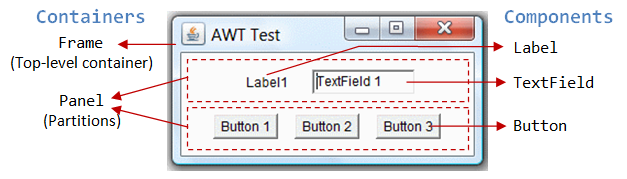There are two groups of GUI elements:
- Component (Widget, Control): Components are elementary GUI entities, such as
Button,Label, andTextField. They are also called widgets, controls in other graphics systems. - Container: Containers, such as
FrameandPanel, are used to hold components in a specific layout (such asFlowLayoutorGridLayout). A container can also hold sub-containers.
In the above figure, there are three containers: a Frame and two Panels. A Frame is the top-level container of an AWT program. A Frame has a title bar (containing an icon, a title, and the minimize/maximize/close buttons), an optional menu bar and the content display area. A Panel is a rectangular area used to group related GUI components in a certain layout. In the above figure, the top-level Frame contains two Panels. There are five components: a Label (providing description), a TextField (for users to enter text), and three Buttons (for user to trigger certain programmed actions).
In a GUI program, a component must be kept (or added) in a container.
You need to identify a container to hold the components. Every container has a method called add(Component c). A container (say aContainer) can invoke aContainer.add(aComponent) to add aComponent into itself. For example,
Panel pnl = new Panel(); // Panel is a container Button btn = new Button("Press"); // Button is a component pnl.add(btn); // The Panel container adds a Button component
GUI components are also called controls (e.g., Microsoft ActiveX Control), widgets (e.g., Eclipse's Standard Widget Toolkit, Google Web Toolkit), which allow users to interact with (or control) the application.
AWT Container Classes
Top-Level Containers: Frame, Dialog and Applet
Each GUI program has a top-level container. The commonly-used top-level containers in AWT are Frame, Dialog and Applet:
-
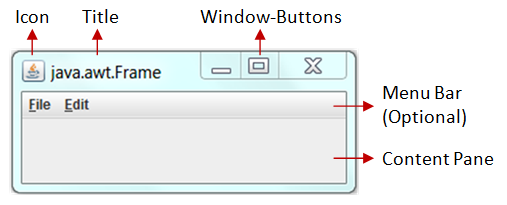
A
Frameprovides the "main window" for your GUI application. It has a title bar (containing an icon, a title, the minimize, maximize/restore-down and close buttons), an optional menu bar, and the content display area. To write a GUI program, we typically start with a subclass extending fromjava.awt.Frameto inherit the main window as follows:import java.awt.Frame; // Using Frame class in package java.awt // A GUI program is written as a subclass of Frame - the top-level container // This subclass inherits all properties from Frame, e.g., title, icon, buttons, content-pane public class MyGUIProgram extends Frame { // private variables ...... // Constructor to setup the GUI components and event handlers public MyGUIProgram() { ...... } // The entry main() method public static void main(String[] args) { // Invoke the constructor (to setup the GUI) by allocating an instance new MyGUIProgram(); } }
-
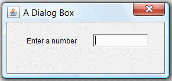
An AWT
Dialogis a "pop-up window" used for interacting with the users. ADialoghas a title-bar (containing an icon, a title and a close button) and a content display area, as illustrated. - An AWT
Applet(in packagejava.applet) is the top-level container for an applet, which is a Java program running inside a browser. Applet is no longer supported in most of the browsers.
Secondary Containers: Panel and ScrollPane
Secondary containers are placed inside a top-level container or another secondary container. AWT provides these secondary containers:
Panel: a rectangular box used to layout a set of related GUI components in pattern such as grid or flow.ScrollPane: provides automatic horizontal and/or vertical scrolling for a single child component.- others.
Hierarchy of the AWT Container Classes
The hierarchy of the AWT Container classes is as follows:
As illustrated, a Container has a LayoutManager to layout the components in a certain pattern, e.g., flow, grid.
AWT Component Classes
AWT provides many ready-made and reusable GUI components in package java.awt. The frequently-used are: Button, TextField, Label, Checkbox, CheckboxGroup (radio buttons), List, and Choice, as illustrated below.
AWT GUI Component: java.awt.Label
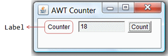A java.awt.Label provides a descriptive text string. Take note that System.out.println() prints to the system console, NOT to the graphics screen. You could use a Label to label another component (such as text field) to provide a text description.
Check the JDK API specification for java.awt.Label.
Constructors
public Label(String strLabel, int alignment); // Construct a Label with the given text String, of the text alignment public Label(String strLabel); // Construct a Label with the given text String public Label(); // Construct an initially empty Label
The Label class has three constructors:
- The first constructor constructs a
Labelobject with the given text string in the given alignment. Note that threestaticconstantsLabel.LEFT,Label.RIGHT, andLabel.CENTERare defined in the class for you to specify the alignment (rather than asking you to memorize arbitrary integer values). - The second constructor constructs a
Labelobject with the given text string in default of left-aligned. - The third constructor constructs a
Labelobject with an initially empty string. You could set the label text via thesetText()method later.
Constants (final static fields)
public static final LEFT; // Label.LEFT public static final RIGHT; // Label.RIGHT public static final CENTER; // Label.CENTER
These three constants are defined for specifying the alignment of the Label's text, as used in the above constructor.
Public Methods
// Examples public String getText(); public void setText(String strLabel); public int getAlignment(); public void setAlignment(int alignment); // Label.LEFT, Label.RIGHT, Label.CENTER
The getText() and setText() methods can be used to read and modify the Label's text. Similarly, the getAlignment() and setAlignment() methods can be used to retrieve and modify the alignment of the text.
Constructing a Component and Adding the Component into a Container
Three steps are necessary to create and place a GUI component:
- Declare the component with an identifier (name);
- Construct the component by invoking an appropriate constructor via the
newoperator; - Identify the container (such as
FrameorPanel) designed to hold this component. The container can then add this component onto itself viaaContainer.add(aComponent)method. Every container has aadd(Component)method. Take note that it is the container that actively and explicitly adds a component onto itself, NOT the other way.
Example
Label lblInput; // Declare an Label instance called lblInput lblInput = new Label("Enter ID"); // Construct by invoking a constructor via the new operator add(lblInput); // this.add(lblInput) - "this" is typically a subclass of Frame lblInput.setText("Enter password"); // Modify the Label's text string lblInput.getText(); // Retrieve the Label's text string
An Anonymous Label Instance
You can create a Label without specifying an identifier, called anonymous instance. In the case, the Java compiler will assign an anonymous identifier for the allocated object. You will not be able to reference an anonymous instance in your program after it is created. This is usually alright for a Label instance as there is often no need to reference a Label after it is constructed.
Example
// Allocate an anonymous Label instance. // "this" container adds the instance. // You CANNOT reference an anonymous instance to carry out further operations. add(new Label("Enter Name: ", Label.RIGHT)); // Same as Label xxx = new Label("Enter Name: ", Label.RIGHT)); // xxx assigned by compiler add(xxx);
AWT GUI Component: java.awt.Button
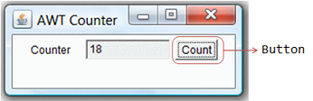A java.awt.Button is a GUI component that triggers a certain programmed action upon clicking.
Constructors
public Button(String btnLabel); // Construct a Button with the given label public Button(); // Construct a Button with empty label
The Button class has two constructors. The first constructor creates a Button object with the given label painted over the button. The second constructor creates a Button object with no label.
Public Methods
public String getLabel(); // Get the label of this Button instance public void setLabel(String btnLabel); // Set the label of this Button instance public void setEnable(boolean enable); // Enable or disable this Button. Disabled Button cannot be clicked.
The getLabel() and setLabel() methods can be used to read the current label and modify the label of a button, respectively.
Note: The latest Swing's JButton replaces getLabel()/setLabel() with getText()/setText() to be consistent with all the components. We will describe Swing later.
Event
Clicking a button fires a so-called ActionEvent and triggers a certain programmed action. I will explain event-handling later.
Example
Button btnColor = new Button("Red"); // Declare and allocate a Button instance called btnColor
add(btnColor); // "this" Container adds the Button
...
btnColor.setLabel("Green"); // Change the button's label
btnColor.getLabel(); // Read the button's label
AWT GUI Component: java.awt.TextField
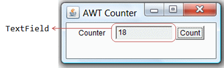A java.awt.TextField is single-line text box for users to enter texts. (There is a multiple-line text box called TextArea.) Hitting the "ENTER" key on a TextField object fires an ActionEvent.
Constructors
public TextField(String initialText, int columns); // Construct a TextField instance with the given initial text string with the number of columns. public TextField(String initialText); // Construct a TextField instance with the given initial text string. public TextField(int columns); // Construct a TextField instance with the number of columns.
Public Methods
public String getText(); // Get the current text on this TextField instance public void setText(String strText); // Set the display text on this TextField instance public void setEditable(boolean editable); // Set this TextField to editable (read/write) or non-editable (read-only)
Event
Hitting the "ENTER" key on a TextField fires a ActionEvent, and triggers a certain programmed action.
Example
TextField tfInput = new TextField(30); // Declare and allocate an TextField instance called tfInput add(tfInput); // "this" Container adds the TextField TextField tfResult = new TextField(); // Declare and allocate an TextField instance called tfResult tfResult.setEditable(false) ; // Set to read-only add(tfResult); // "this" Container adds the TextField ...... // Read an int from TextField "tfInput", square it, and display on "tfResult". // getText() returns a String, need to convert to int int number = Integer.parseInt(tfInput.getText()); number *= number; // setText() requires a String, need to convert the int number to String. tfResult.setText(number + "");
Take note that getText()/SetText() operates on String. You can convert a String to a primitive, such as int or double via static method Integer.parseInt() or Double.parseDouble(). To convert a primitive to a String, simply concatenate the primitive with an empty String.
Example 1: AWTCounter

Let's assemble a few components together into a simple GUI counter program, as illustrated. It has a top-level container Frame, which contains three components - a Label "Counter", a non-editable TextField to display the current count, and a "Count" Button. The TextField shall display count of 0 initially.
Each time you click the button, the counter's value increases by 1.
1 2 3 4 5 6 7 8 9 10 11 12 13 14 15 16 17 18 19 20 21 22 23 24 25 26 27 28 29 30 31 32 33 34 35 36 37 38 39 40 41 42 43 44 45 46 47 48 49 50 51 52 53 54 55 56 57 58 59 60 61 62 63 64 65 66 67 68 |
import java.awt.*; // Using AWT container and component classes import java.awt.event.*; // Using AWT event classes and listener interfaces // An AWT program inherits from the top-level container java.awt.Frame public class AWTCounter extends Frame { private Label lblCount; // Declare a Label component private TextField tfCount; // Declare a TextField component private Button btnCount; // Declare a Button component private int count = 0; // Counter's value // Constructor to setup GUI components and event handlers public AWTCounter () { setLayout(new FlowLayout()); // "super" Frame, which is a Container, sets its layout to FlowLayout to arrange // the components from left-to-right, and flow to next row from top-to-bottom. lblCount = new Label("Counter"); // construct the Label component add(lblCount); // "super" Frame container adds Label component tfCount = new TextField(count + "", 10); // construct the TextField component with initial text tfCount.setEditable(false); // set to read-only add(tfCount); // "super" Frame container adds TextField component btnCount = new Button("Count"); // construct the Button component add(btnCount); // "super" Frame container adds Button component btnCount.addActionListener(new BtnCountListener()); // anonymous instance // same as //BtnCountListener listener = new BtnCountListener(); //btnCount.addActionListener(listener); // "btnCount" is the source object that fires an ActionEvent when clicked. // The source object adds an instance of BtnCountListener as an ActionEvent listener, // which provides an ActionEvent handler called actionPerformed(). // Clicking "Count" button calls back actionPerformed(). setTitle("AWT Counter"); // "super" Frame sets its title setSize(300, 100); // "super" Frame sets its initial window size // For inspecting the Container/Components objects // System.out.println(this); // System.out.println(lblCount); // System.out.println(tfCount); // System.out.println(btnCount); setVisible(true); // "super" Frame shows // System.out.println(this); // System.out.println(lblCount); // System.out.println(tfCount); // System.out.println(btnCount); } // The entry main() method public static void main(String[] args) { // Invoke the constructor to setup the GUI, by allocating an instance AWTCounter app = new AWTCounter(); // or simply "new AWTCounter();" for an anonymous instance } // Define an inner class to handle the "Count" button-click private class BtnCountListener implements ActionListener { // ActionEvent handler - Called back upon button-click. @Override public void actionPerformed(ActionEvent evt) { ++count; // Increase the counter value // Display the counter value on the TextField tfCount tfCount.setText(count + ""); // Convert int to String } } } |
To exit this program, you have to close the CMD-shell (or press "control-c" on the CMD console); or push the "red" close button in Eclipse's Application Console. This is because we have yet to write the handler for the Frame's close button. We shall do that in the later example.
Dissecting the AWTCounter.java
- The
importstatements (Lines 1-2) are needed, as AWT container and component classes, such asFrame,Button,TextField, andLabel,are kept in thejava.awtpackage; while AWT events and event-listener interfaces, such asActionEventandActionListenerare kept in thejava.awt.eventpackage. - A GUI program needs a top-level container, and is often written as a subclass of
Frame(Line 5). In other words, this classAWTCounteris aFrame, and inherits all the attributes and behaviors of aFrame, such as the title bar and content pane. - Lines 11 to 47 define a constructor, which is used to setup the GUI components and event handlers.
- In Line 13, the
setLayout()(inherited from the superclassFrame) is used to set the layout of the container.FlowLayoutis used which arranges the components in left-to-right and flows into next row in a top-to-bottom manner. - A
Label,TextField(non-editable), andButtonare constructed. We invoke theadd()method (inherited from the superclassFrame) to add these components into container. - In Line 36-37, we invoke the
setSize()and thesetTitle()(inherited from the superclassFrame) to set the initial size and the title of theFrame. ThesetVisible(true)method (Line 42) is then invoked to show the display. - Line 27 (or Line 29-30) is used to setup the callback event-handler, which will be discussed in length later. In brief, whenever the button is clicked, the
actionPerformed()will be called. In theactionPerformed()(Lines 61-66), the counter value increases by 1 and displayed on theTextField. - In the entry
main()method (Lines 52-56), an instance ofAWTCounteris constructed. The constructor is executed to initialize the GUI components and setup the event-handlers. The GUI program then waits for the user action.
Inspecting Container/Components via toString()
It is interesting to inspect the GUI objects via the toString(), to gain an insight to these classes. (Alternatively, use a graphic debugger in Eclipse/NetBeans or study the JDK source code.) For example, if we insert the following code before and after the setVisible():
System.out.println(this); //AWTCounter[frame0,93,0,300x100,invalid,hidden,layout=java.awt.FlowLayout,title=AWT Counter,resizable,normal] // name (assigned by compiler) is "frame0"; top-left (x,y) at (93,0); width/height is 300x100 (via setSize()); System.out.println(lblCount); //java.awt.Label[label0,0,0,0x0,invalid,align=left,text=Counter] // name is "Label0"; align is "Label.LEFT" (default); text is "Counter" (assigned in constructor) System.out.println(tfCount); //java.awt.TextField[textfield0,0,0,0x0,invalid,text=0,selection=0-0] // name is "Textfield0"; text is "0" (assigned in constructor) System.out.println(btnCount); //java.awt.Button[button0,0,0,0x0,invalid,label=Count] // name is "button0"; label text is "Count" (assigned in constructor) setVisible(true); // "super" Frame shows System.out.println(this); //AWTCounter[frame0,93,0,300x100,invalid,layout=java.awt.FlowLayout,title=AWT Counter,resizable,normal] System.out.println(lblCount); //java.awt.Label[label0,31,35,57x23,align=left,text=Counter] System.out.println(tfCount); //java.awt.TextField[textfield0,93,35,124x23,text=0,selection=0-0] System.out.println(btnCount); //java.awt.Button[button0,222,35,46x23,label=Count]
Example 2: AWTAccumulator

In this example, the top-level container is again the typical java.awt.Frame. It contains 4 components: a Label "Enter an Integer", a TextField for accepting user input, another Label "The Accumulated Sum is", and another non-editable TextField for displaying the sum. The components are arranged in GridLayout of 2 rows 2 columns.
The program shall accumulate the number entered into the input TextField and display the sum in the output TextField.
1 2 3 4 5 6 7 8 9 10 11 12 13 14 15 16 17 18 19 20 21 22 23 24 25 26 27 28 29 30 31 32 33 34 35 36 37 38 39 40 41 42 43 44 45 46 47 48 49 50 51 52 53 54 55 56 57 58 59 60 |
import java.awt.*; // Using AWT container and component classes import java.awt.event.*; // Using AWT event classes and listener interfaces // An AWT GUI program inherits (customized) from the top-level container // java.awt.Frame public class AWTAccumulator extends Frame { //private Label lblInput; // Declare input Label (to use anonymous) //private Label lblOutput; // Declare output Label (to use anonymous) private TextField tfInput; // Declare input TextField private TextField tfOutput; // Declare output TextField private int sum = 0; // Accumulated sum, init to 0 // Constructor to setup the GUI components and event handlers public AWTAccumulator() { setLayout(new GridLayout(2, 2)); // "super" Frame (Container) sets layout to GridLayout of 2 rows 2 columns. add(new Label("Enter an Integer: ")); // "super" Frame adds an anonymous Label tfInput = new TextField(10); // Construct TextField add(tfInput); // "super" Frame adds TextField tfInput.addActionListener(new TFInputListener()); // anonymous instance // "tfInput" is the source object that fires an ActionEvent upon entered. // The source add an anonymous instance of TFInputListener as an ActionEvent // listener, which provides an ActionEvent handler called actionPerformed(). // Hitting "enter" on tfInput invokes actionPerformed(). add(new Label("The Accumulated Sum is: ")); // "super" Frame adds an anonymous Label tfOutput = new TextField(10); // allocate TextField tfOutput.setEditable(false); // read-only add(tfOutput); // "super" Frame adds TextField setTitle("AWT Accumulator"); // "super" Frame sets title setSize(350, 120); // "super" Frame sets initial window size setVisible(true); // "super" Frame shows } // The entry main() method public static void main(String[] args) { // Invoke the constructor to setup the GUI, by allocating an anonymous instance new AWTAccumulator(); } // Define an inner class to handle the input TextField. // An ActionEvent listener must implement ActionListener interface. private class TFInputListener implements ActionListener { // ActionEvent handler - Called back upon hitting "enter" key on TextField @Override public void actionPerformed(ActionEvent evt) { // Get the String entered into the TextField tfInput, convert to int int numberIn = Integer.parseInt(tfInput.getText()); sum += numberIn; // Accumulate numbers entered into sum tfInput.setText(""); // Clear input TextField tfOutput.setText(sum + ""); // Display sum on the output TextField // convert int to String } } } |
Dissecting the AWTAccumulator.java
- An AWT GUI program extends from
java.awt.Frame(Line 6) - the top-level window container. - In the constructor (Line 14), we constructs 4 components - 2 anonymous
java.awt.Labels and 2java.awt.TextFields. TheFrameadds the components, inGridLayout. tfInput(TextField) is the source object, which fires anActionEventupon hitting the Enter key.tfInputadds an anonymous instance ofTFInputListeneras anActionEventhandler (Line 23). The listener class needs to implementActionListenerinterface and provides implementation to methodactionPerformed(). Whenever an user hits Enter on thetfInput(TextField), theactionPerformed()will be called back.
AWT Event-Handling
Java adopts the so-called "Event-Driven" (or "Event-Delegation") programming model for event-handling, similar to most of the visual programming languages like Visual Basic.
In event-driven programming, a piece of event-handling codes is executed (or called back by the graphics subsystem) when an event was fired in response to an user input (such as clicking a mouse button or hitting the ENTER key in a text field).
Callback Methods
In the above examples, the method actionPerformed() is known as a callback method. In other words, you never invoke actionPerformed() in your codes explicitly. The actionPerformed() is called back by the graphics subsystem under certain circumstances in response to certain user actions.
JavaScript can attach a Callback method to an Event Directly
In some languages, you can directly attach a method (or function) to an event (such as mouse-click). For example, the following JavaScript code (called JSCounter.html) implement a counter similar to the AWTCounter, with a text label, text field and button:
<!DOCTYPE html> <html lang="en"> <head> <meta charset="utf-8"> <title>JavaScript Counter</title></head> <body> <form> Count: <input id="tfCount" type="text" value="0"> <input id="btnCount" type="button" value="Hello" onclick=myBtnOnClick() onmouseover=myBtnMouseOver() > </form> <script> function myBtnOnClick() { tfCount.value++; } function myBtnMouseOver() { btnCount.value = "Count Up"; } function myBtnMouseOut() { btnCount.value = "Click Me"; } btnCount.onmouseout = myBtnMouseOut; // assign a function to a variable </script> </body> </html>
In Java, we CANNOT attach a method to a source object directly, as method is not a first-class object in Java. For example, a Java method cannot accept methods as its arguments and it cannot return a method; you cannot assign a method to a variable, etc. (JavaScript and C language CAN!).
Source, Event and Listener Objects
The AWT's event-handling classes are kept in package java.awt.event.
Three kinds of objects are involved in the event-handling: a source, listener(s) and an event object.
The source object (such as Button and Textfield) interacts with the user. Upon triggered, the source object creates an event object to capture the action (e.g., mouse-click x and y, texts entered, etc). This event object will be messaged to all the registered listener object(s), and an appropriate event-handler method of the listener(s) is called-back to provide the response. In other words, triggering a source fires an event to all its listener(s), and invoke an appropriate event handler of the listener(s).
To express interest for a certain source's event, the listener(s) must be registered with the source. In other words, the listener(s) "subscribes" to a source's event, and the source "publishes" the event to all its subscribers upon activation. This is known as subscribe-publish or observable-observer design pattern.
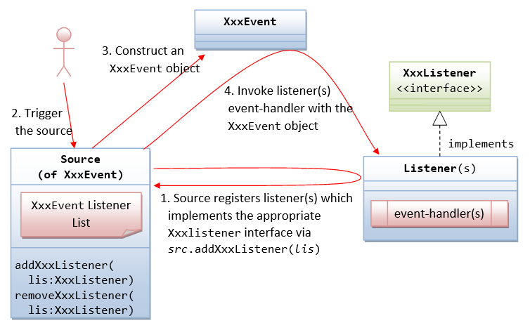The sequence of steps is illustrated above:
- The source object registers its listener(s) for a certain type of event.
A source fires an event when triggered. For example, clicking a
Buttonfires anActionEvent, clicking a mouse button firesMouseEvent, typing a key firesKeyEvent, and etc.How the source and listener understand each other? The answer is via an agreed-upon interface. For example, if a source is capable of firing an event called
XxxEvent(e.g.,ActionEvent). Firstly, we need to declare an interface calledXxxListener(e.g.,ActionListener) containing the names of the handler methods (recall that aninterfacecontains onlyabstractmethods without implementation). For example, theActionListenerinterface is declared as follows:// An ActionListener interface, which declares the signature of the handlers public interface ActionListener { public void actionPerformed(ActionEvent evt); }Secondly, all
XxxEventlisteners must implement theXxxListenerinterface. That is, the listeners must provide their own implementations (i.e., programmed responses) to all theabstractmethods declared in theXxxListenerinterface. In this way, the listener(s) can response to these events appropriately. For example,// An example of MouseListener, which provides implementation to the event handler methods class MyActionListener implement ActionListener { @Override public void actionPerformed(ActionEvent evt) { System.out.println("ActionEvent detected!"); } }Thirdly, in the source, we need to maintain a list of
XxxEventlistener object(s), and define two methods:addXxxListener()andremoveXxxListener()to add and remove aXxxEventlistener from this list. For theActionEvent, the signature of the methods are:public void addActionListener(ActionListener lis); public void removeActionListener(ActionListener lis);
Take note that the
addXxxListener()takes aXxxListenerobject as its sole parameter. In other words, it can only add objects of the typeXxxListener, and its sub-type. SinceXxxListeneris aninterface, you cannot create instance ofXxxListener, but need to create instance of a subclass implementing theXxxListenerinterface.In summary, we identify the source, the event-listener interface, and the listener object. The listener must implement the event-listener interface. The source object then registers listener object via the
addXxxListener(XxxListener lis)method. - The source is triggered by a user.
- The source create a
XxxEventobject, which encapsulates the necessary information about the activation. For example, the(x, y)position of the mouse pointer, the text entered, etc. - Finally, for each of the
XxxEventlisteners in the listener list, the source invokes the appropriate handler on the listener(s), which provides the programmed response.
In summary, triggering a source fires an event to all its registered listeners, and invoke an appropriate handler of the listener.
Revisit Example 1 AWTCounter: ActionEvent and ActionListener Interface
Clicking a Button (or hitting the "Enter" key on a TextField) fires an ActionEvent to all its ActionEvent listener(s). An ActionEvent listener must implement the ActionListener interface, which declares one abstract method called actionPerformed() as follow:
public interface ActionListener {
public void actionPerformed(ActionEvent evt);
// Called back upon button-click (on Button), enter-key pressed (on TextField)
}
Here are the event-handling steps:
- We identify
btnCount(ofButton) as the source object. - Clicking
Buttonfires anActionEventto all itsActionEventlistener(s). - The listener(s) is required to implement
ActionListenerinterface, and override theactionPerformed()method to provide the response. In Line 56-65, we write an inner class calledBtnCountListener, which override theactionPerformed()to increment and display the count. An inner class is a class defined inside an outer class, and it can access the private entities of the outer class. We will elaborate on the inner class in the next section. - The source object registers listener via the
addActionListener(). In this example, the sourcebtnCount(Button) adds an instance ofBtnCountListeneras a listener via:BtnCountListener listener = new BtnCountListener(); btnCount.addActionListener(listener);
Note that
addActionListener()takes an argument of the typeActionListener.BtnCountListener, which implementsActionListenerinterface (i.e., a subclass ofActionListener), is upcasted and passed to theaddActionListener()method. - Upon button-click, the
btnCountcreates anActionEventobject, and calls back theactionPerformed(ActionEvent)method of all its registered listener(s) with theActionEventobject created:ActionEvent evt = new ActionEvent( ...... ); listener.actionPerformed(evt); // for all its listener(s)
The sequence diagram is as follows:
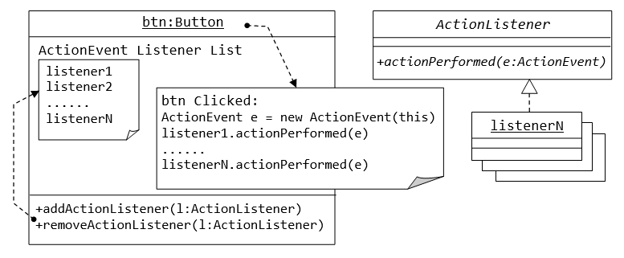 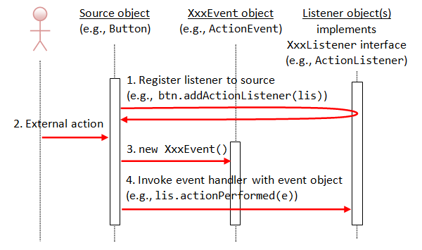Revisit Example 2 AWTAccumulator: ActionEvent and ActionListener Interface
In this example,
- We identify the
tfInput(ofTextField) as the source object. - Hitting the "Enter" key on a
TextFieldfires anActionEventto all itsActionEventlistener(s). - In Line 46-59, we define an inner class called
TFInputListeneras theActionEventlistener.TheActionEventlistener is required to implement theActionListenerinterface, and override theactionPerformed()method to provide the programmed response upon activation. - The source object
tfInput(ofTextField) registers an anonymous instance ofTFInputListeneras itsActionEventlistener via thetfInput.addActionListener(new TFInputListener())(Line 23).
Example 3: WindowEvent and WindowListener Interface
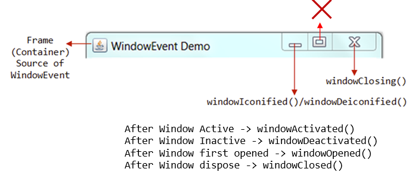A WindowEvent is fired (to all its WindowEvent listeners) when a window (e.g., Frame) has been opened/closed, activated/deactivated, iconified/deiconified via the 3 buttons at the top-right corner or other means. The source of WindowEvent shall be a top-level window-container such as Frame.
A WindowEvent listener must implement WindowListener interface, which declares 7 abstract event-handling methods, as follows. Among them, the windowClosing(), which is called back upon clicking the window-close button, is the most commonly-used.
public void windowClosing(WindowEvent evt) // Called-back when the user attempts to close the window by clicking the window close button. // This is the most-frequently used handler. public void windowOpened(WindowEvent evt) // Called-back the first time a window is made visible. public void windowClosed(WindowEvent evt) // Called-back when a window has been closed as the result of calling dispose on the window. public void windowActivated(WindowEvent evt) // Called-back when the Window is set to be the active Window. public void windowDeactivated(WindowEvent evt) // Called-back when a Window is no longer the active Window. public void windowIconified(WindowEvent evt) // Called-back when a window is changed from a normal to a minimized state. public void windowDeiconified(WindowEvent evt) // Called-back when a window is changed from a minimized to a normal state.
The following program added support for "close-window button" to "Example 1: AWTCounter".
1 2 3 4 5 6 7 8 9 10 11 12 13 14 15 16 17 18 19 20 21 22 23 24 25 26 27 28 29 30 31 32 33 34 35 36 37 38 39 40 41 42 43 44 45 46 47 48 49 50 51 52 53 54 55 56 57 58 59 60 61 62 63 64 65 66 67 68 69 70 |
import java.awt.*; // Using AWT containers and components import java.awt.event.*; // Using AWT events classes and listener interfaces // An AWT GUI program inherits the top-level container java.awt.Frame public class WindowEventDemo extends Frame { private TextField tfCount; // Declare a TextField component private Button btnCount; // Declare a Button component private int count = 0; // Counter's value // Constructor to setup the GUI components and event handlers public WindowEventDemo() { setLayout(new FlowLayout()); // "super" Frame sets to FlowLayout add(new Label("Counter")); // "super" Frame adds an anonymous Label tfCount = new TextField("0", 10); // Construct the TextField tfCount.setEditable(false); // read-only add(tfCount); // "super" Frame adds TextField btnCount = new Button("Count"); // Construct the Button add(btnCount); // "super" Frame adds Button btnCount.addActionListener(new BtnCountListener()); // btnCount (source object) fires ActionEvent upon clicking // btnCount adds an anonymous instance of BtnCountListener // as an ActionEvent listener addWindowListener(new MyWindowListener()); // "super" Frame (source object) fires WindowEvent. // "super" Frame adds an anonymous instance of MyWindowListener // as a WindowEvent listener. setTitle("WindowEvent Demo"); // "super" Frame sets title setSize(300, 100); // "super" Frame sets initial size setVisible(true); // "super" Frame shows } // The entry main() method public static void main(String[] args) { new WindowEventDemo(); // Let the construct do the job } // Define an inner class to handle ActionEvent of btnCount private class BtnCountListener implements ActionListener { @Override public void actionPerformed(ActionEvent evt) { ++count; tfCount.setText(count + ""); } } // Define an inner class to handle WindowEvent of this Frame private class MyWindowListener implements WindowListener { // Called back upon clicking close-window button @Override public void windowClosing(WindowEvent evt) { System.exit(0); // Terminate the program } // Not Used, BUT need to provide an empty body to compile. @Override public void windowOpened(WindowEvent evt) { } @Override public void windowClosed(WindowEvent evt) { } // For Debugging @Override public void windowIconified(WindowEvent evt) { System.out.println("Window Iconified"); } @Override public void windowDeiconified(WindowEvent evt) { System.out.println("Window Deiconified"); } @Override public void windowActivated(WindowEvent evt) { System.out.println("Window Activated"); } @Override public void windowDeactivated(WindowEvent evt) { System.out.println("Window Deactivated"); } } } |
In this example, we shall modify the earlier AWTCounter example to handle the WindowEvent. Recall that pushing the "close-window" button on the AWTCounter has no effect, as it did not handle the WindowEvent of windowClosing(). We included the WindowEvent handling codes in this example.
- We identify the
superFrameas the source object. - The
Framefires theWindowEventto all its registeredWindowEventlistener(s). - In Line 53-69, we define an inner class called
MyWindowListeneras theWindowEventlistener. It is required to implement theWindowListenerinterface, which declares 7 abstract methods:windowOpened(),windowClosed(),windowClosing(),windowActivated(),windowDeactivated(),windowIconified()andwindowDeiconified(). - We register an anonymous instance of
MyWindowListeneras theWindowEventlistener to the sourceFramevia methodaddWindowListener(new MyWindowListener()). - We override the
windowClosing()handler to terminate the program usingSystem.exit(0). We ignore the other 6 handlers, but required to provide an empty body for compilation.
The sequence diagram is as follow:
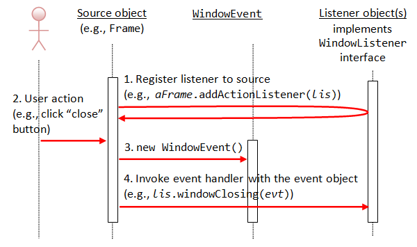Example 4: MouseEvent and MouseListener Interface
A MouseEvent is fired when you press, release, or click (press followed by release) a mouse-button (left or right button) at the source object; or position the mouse-pointer at (enter) and away (exit) from the source object.
A MouseEvent listener must implement the MouseListener interface, which declares the following five abstract methods:
public void mouseClicked(MouseEvent evt) // Called-back when the mouse-button has been clicked (pressed followed by released) on the source. public void mousePressed(MouseEvent evt) public void mouseReleased(MouseEvent evt) // Called-back when a mouse-button has been pressed/released on the source. // A mouse-click invokes mousePressed(), mouseReleased() and mouseClicked(). public void mouseEntered(MouseEvent evt) public void mouseExited(MouseEvent evt) // Called-back when the mouse-pointer has entered/exited the source.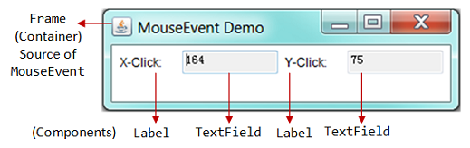
1 2 3 4 5 6 7 8 9 10 11 12 13 14 15 16 17 18 19 20 21 22 23 24 25 26 27 28 29 30 31 32 33 34 35 36 37 38 39 40 41 42 43 44 45 46 47 48 49 50 51 52 53 54 55 56 57 |
import java.awt.*;
import java.awt.event.*;
public class MouseEventDemo extends Frame {
private TextField tfMouseX; // to display mouse-click-x
private TextField tfMouseY; // to display mouse-click-y
// Constructor - Setup the UI components and event handlers
public MouseEventDemo() {
setLayout(new FlowLayout()); // "super" frame sets its layout to FlowLayout
// Label (anonymous)
add(new Label("X-Click: ")); // "super" frame adds Label component
// TextField
tfMouseX = new TextField(10); // 10 columns
tfMouseX.setEditable(false); // read-only
add(tfMouseX); // "super" frame adds TextField component
// Label (anonymous)
add(new Label("Y-Click: ")); // "super" frame adds Label component
// TextField
tfMouseY = new TextField(10);
tfMouseY.setEditable(false); // read-only
add(tfMouseY); // "super" frame adds TextField component
addMouseListener(new MyMouseListener());
// "super" frame (source) fires the MouseEvent.
// "super" frame adds an anonymous instance of MyMouseListener
// as a MouseEvent listener.
setTitle("MouseEvent Demo"); // "super" Frame sets title
setSize(350, 100); // "super" Frame sets initial size
setVisible(true); // "super" Frame shows
}
public static void main(String[] args) {
new MouseEventDemo(); // Let the constructor do the job
}
// Define an inner class to handle MouseEvent
private class MyMouseListener implements MouseListener {
// Called back upon mouse clicked
@Override
public void mouseClicked(MouseEvent evt) {
tfMouseX.setText(evt.getX() + "");
tfMouseY.setText(evt.getY() + "");
}
// Not used - need to provide an empty body to compile.
@Override public void mousePressed(MouseEvent evt) { }
@Override public void mouseReleased(MouseEvent evt) { }
@Override public void mouseEntered(MouseEvent evt) { }
@Override public void mouseExited(MouseEvent evt) { }
}
}
|
In this example, we setup a GUI with 4 components (two anonymous Labels and two non-editable TextFields) inside a top-level container Frame, arranged in FlowLayout.
To demonstrate the MouseEvent:
- We identity
superFrameas the source object. - The
Framefires aMouseEventto all itsMouseEventlistener(s) when you click/press/release a mouse-button or enter/exit with the mouse-pointer. - In Line 42-56, we define an inner class called
MyMouseListeneras theMouseEventlistener. It is required to implement theMouseListenerinterface, which declares 5 abstract methods:mouseClicked(),mousePressed(),mouseReleased(),mouseEntered(), andmouseExit(). We override themouseClicked()to display the (x, y) coordinates of the mouse click on the two displayedTextFields. We ignore all the other handlers (for simplicity - but you need to provide an empty body for compilation). - We register an anonymous instance of
MyMouseListeneras theMouseEventlistener tosuperFrame(source) via the methodaddMouseListener(new MyMouseListener()).
Try: Include a WindowListener to handle the close-window button.
Example 5: MouseEvent and MouseMotionListener Interface
A MouseEvent is also fired when you move and drag the mouse pointer at the source object. But you need to use MouseMotionListener to handle the mouse-move and mouse-drag. The MouseMotionListener interface declares the following two abstract methods:
public void mouseDragged(MouseEvent e) // Called-back when a mouse-button is pressed on the source component and then dragged. public void mouseMoved(MouseEvent e) // Called-back when the mouse-pointer has been moved onto the source component but no buttons have been pushed.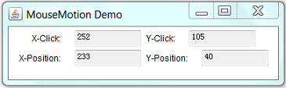
1 2 3 4 5 6 7 8 9 10 11 12 13 14 15 16 17 18 19 20 21 22 23 24 25 26 27 28 29 30 31 32 33 34 35 36 37 38 39 40 41 42 43 44 45 46 47 48 49 50 51 52 53 54 55 56 57 58 59 60 61 62 63 64 65 66 67 68 69 70 71 72 73 74 75 76 77 78 79 80 81 |
import java.awt.*; import java.awt.event.*; // An AWT GUI program inherits from the top-level container java.awt.Frame public class MouseMotionDemo extends Frame { // To display the (x, y) of the mouse-clicked private TextField tfMouseClickX; private TextField tfMouseClickY; // To display the (x, y) of the current mouse-pointer position private TextField tfMousePositionX; private TextField tfMousePositionY; // Constructor to setup the GUI components and event handlers public MouseMotionDemo() { setLayout(new FlowLayout()); // "super" frame sets to FlowLayout add(new Label("X-Click: ")); tfMouseClickX = new TextField(10); tfMouseClickX.setEditable(false); add(tfMouseClickX); add(new Label("Y-Click: ")); tfMouseClickY = new TextField(10); tfMouseClickY.setEditable(false); add(tfMouseClickY); add(new Label("X-Position: ")); tfMousePositionX = new TextField(10); tfMousePositionX.setEditable(false); add(tfMousePositionX); add(new Label("Y-Position: ")); tfMousePositionY = new TextField(10); tfMousePositionY.setEditable(false); add(tfMousePositionY); MyMouseListener listener = new MyMouseListener(); addMouseListener(listener); addMouseMotionListener(listener); // "super" frame (source) fires MouseEvent. // "super" frame adds an instance of MyMouseListener // as MouseListener and MouseMotionListener. setTitle("MouseMotion Demo"); // "super" Frame sets title setSize(400, 120); // "super" Frame sets initial size setVisible(true); // "super" Frame shows } // The entry main() method public static void main(String[] args) { new MouseMotionDemo(); // Let the constructor do the job } // Define an inner class as both the MouseListener and MouseMotionListener // A Java class can extend one superclass but implement many interfaces private class MyMouseListener implements MouseListener, MouseMotionListener { /* MouseListener handlers */ // Called back when a mouse-button has been clicked @Override public void mouseClicked(MouseEvent evt) { tfMouseClickX.setText(evt.getX() + ""); tfMouseClickY.setText(evt.getY() + ""); } // Not Used, but need to provide an empty body for compilation @Override public void mousePressed(MouseEvent evt) { } @Override public void mouseReleased(MouseEvent evt) { } @Override public void mouseEntered(MouseEvent evt) { } @Override public void mouseExited(MouseEvent evt) { } /* MouseMotionEvent handlers */ // Called back when the mouse-pointer has been moved @Override public void mouseMoved(MouseEvent evt) { tfMousePositionX.setText(evt.getX() + ""); tfMousePositionY.setText(evt.getY() + ""); } // Not Used, but need to provide an empty body for compilation @Override public void mouseDragged(MouseEvent evt) { } } } |
In this example, we shall illustrate both the MouseListener and MouseMotionListener.
- We identify the
superFrameas the source, which fires theMouseEventto its registeredMouseListenerandMouseMotionListener. - In Line 53-80, we define an inner class called
MyMouseListeneras both theMouseListenerandMouseMotionListener. - We register an instance of
MyMouseListeneras thesuperFramevia methodaddMouseListener()andaddMouseMotionListener(). - The
MouseMotionListenerneeds to implement 2 abstract methods:mouseMoved()andmouseDragged()declared in theMouseMotionListenerinterface. - We override the
mouseMoved()to display the (x, y) position of the mouse pointer. We ignore theMouseDragged()handler by providing an empty body for compilation.
Try: Include a WindowListener to handle the close-window button.
Example 6: KeyEvent and KeyListener Interface
A KeyEvent is fired when you pressed, released, and typed (pressed followed by released) a key on the source object. A KeyEvent listener must implement KeyListener interface, which declares three abstract methods:
public void keyTyped(KeyEvent e) // Called-back when a key has been typed (pressed and released). public void keyPressed(KeyEvent e) public void keyReleased(KeyEvent e) // Called-back when a key has been pressed or released.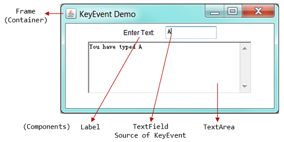
1 2 3 4 5 6 7 8 9 10 11 12 13 14 15 16 17 18 19 20 21 22 23 24 25 26 27 28 29 30 31 32 33 34 35 36 37 38 39 40 41 42 43 44 45 46 47 |
import java.awt.*; import java.awt.event.*; // An AWT GUI program inherits from the top-level container java.awt.Frame public class KeyEventDemo extends Frame { private TextField tfInput; // Single-line TextField to receive tfInput key private TextArea taDisplay; // Multi-line TextArea to taDisplay result // Constructor to setup the GUI components and event handlers public KeyEventDemo() { setLayout(new FlowLayout()); // "super" frame sets to FlowLayout add(new Label("Enter Text: ")); tfInput = new TextField(10); add(tfInput); taDisplay = new TextArea(5, 40); // 5 rows, 40 columns add(taDisplay); tfInput.addKeyListener(new MyKeyListener()); // tfInput TextField (source) fires KeyEvent. // tfInput adds an anonymous instance of MyKeyListener // as a KeyEvent listener. setTitle("KeyEvent Demo"); // "super" Frame sets title setSize(400, 200); // "super" Frame sets initial size setVisible(true); // "super" Frame shows } // The entry main() method public static void main(String[] args) { new KeyEventDemo(); // Let the constructor do the job } // Define an inner class to handle KeyEvent private class MyKeyListener implements KeyListener { // Called back when a key has been typed (pressed and released) @Override public void keyTyped(KeyEvent evt) { taDisplay.append("You have typed " + evt.getKeyChar() + "\n"); } // Not Used, but need to provide an empty body for compilation @Override public void keyPressed(KeyEvent evt) { } @Override public void keyReleased(KeyEvent evt) { } } } |
In this example:
- We identify the
tfInput(ofTextField) as the source object. - The source fires a
KeyEventwhen you press/release/type a key to all itsKeyEventlistener(s). - In Line 35-46, we define an inner class called
MyKeyListeneras theKeyEventlistener. - We register an anonymous instance of
MyKeyListeneras theKeyEventlistener to the sourceTextFieldvia methodinput.addKeyListener(). - The
KeyEventlistener needs to implement theKeyListenerinterface, which declares 3 abstract methods:keyTyped(),keyPressed(),keyReleased(). - We override the
keyTyped()to display key typed on the displayTextArea. We ignore thekeyPressed()andkeyReleased().
Nested (Inner) Classes
Without Inner classes
In our AWTCounter example, suppose we would like to write an external ordinary class (say MyExternalBtnListener) as our ActionEvent listener. This class shall implement ActionListener interface and override the actionPerformed() method. An example is as follows:
import java.awt.*; // Using AWT container and component classes import java.awt.event.*; // Using AWT event classes and listener interfaces // An AWT program inherits from the top-level container java.awt.Frame public class AWTCounterExternal extends Frame { private Label lblCount; // Declare a Label component private TextField tfCount; // Declare a TextField component private Button btnCount; // Declare a Button component private int count = 0; // Counter's value // Constructor to setup GUI components and event handlers public AWTCounterExternal () { setLayout(new FlowLayout()); // "super" Frame, which is a Container, sets its layout to FlowLayout to arrange // the components from left-to-right, and flow to next row from top-to-bottom. lblCount = new Label("Counter"); // construct the Label component add(lblCount); // "super" Frame container adds Label component tfCount = new TextField(count + "", 10); // construct the TextField component with initial text tfCount.setEditable(false); // set to read-only add(tfCount); // "super" Frame container adds TextField component btnCount = new Button("Count"); // construct the Button component add(btnCount); // "super" Frame container adds Button component MyExternalBtnListener listener = new MyExternalBtnListener(); btnCount.addActionListener(listener); // "btnCount" is the source object that fires an ActionEvent when clicked. // The source add an instance of MyExternalBtnListener as an ActionEvent listener, // which provides an ActionEvent handler called actionPerformed(). // Clicking "btnCount" invokes actionPerformed(). setTitle("AWT Counter"); // "super" Frame sets its title setSize(250, 100); // "super" Frame sets its initial window size // For inspecting the Container/Components objects // System.out.println(this); // System.out.println(lblCount); // System.out.println(tfCount); // System.out.println(btnCount); setVisible(true); // "super" Frame shows // System.out.println(this); // System.out.println(lblCount); // System.out.println(tfCount); // System.out.println(btnCount); } // The entry main() method public static void main(String[] args) { // Invoke the constructor to setup the GUI, by allocating an instance AWTCounterExternal app = new AWTCounterExternal(); // or simply "new AWTCounter();" for an anonymous instance } } // We write an external class as the Button's ActionEvent listener. // This class must implement ActionListener interface and override // the actionPerformed() method. class MyExternalBtnListener implements ActionListener { // ActionEvent handler - Called back upon button-click. @Override public void actionPerformed(ActionEvent evt) { System.out.println("You clicked the button!"); // Cannot access variables count and tfCount!!! // ++count; // Increase the counter value // tfCount.setText(count + ""); // Convert int to String } }
Can you see the problem? This external class cannot access the variables such as count and tfCount in the AWTCounterExternal class. We can fix this problem, but the solution is messy. An easy solution is to use an inner class instead of an ordinary external class (to be explained in the following sections).
What are Inner classes?
A nested class (or commonly called inner class) is a class defined inside another class - introduced in JDK 1.1. As an illustration, two nested classes MyNestedClass1 and MyNestedClass2 are defined inside the definition of an outer class called MyOuterClass.
public class MyOuterClass { // outer class defined here ...... private class MyNestedClass1 { ...... } // an nested class defined inside the outer class public static class MyNestedClass2 { ...... } // an "static" nested class defined inside the outer class ...... }
A nested class has these properties:
- A nested class is a proper class. That is, it could contain constructors, member variables and member methods. You can create an instance of a nested class via the
newoperator and constructor. - A nested class is a member of the outer class, just like any member variables and methods defined inside a class.
- Most importantly, a nested class can access the
privatemembers (variables/methods) of the enclosing outer class, as it is at the same level as theseprivatemembers. This is the property that makes inner class useful. - A nested class can have
private,public,protected, or the default access, just like any member variables and methods defined inside a class. Aprivateinner class is only accessible by the enclosing outer class, and is not accessible by any other classes. [An top-level outer class cannot be declaredprivate, as no one can use aprivateouter class.] - A nested class can also be declared
static,finalorabstract, just like any ordinary class. - A nested class is NOT a subclass of the outer class. That is, the nested class does not inherit the variables and methods of the outer class. It is an ordinary self-contained class. [Nonetheless, you could declare it as a subclass of the outer class, via keyword "
extends OuterClassName", in the nested class's definition.]
The usages of nested class are:
- To control visibilities (of the member variables and methods) between inner/outer class. The nested class, being defined inside an outer class, can access
privatemembers of the outer class. - To place a piece of class definition codes closer to where it is going to be used, to make the program clearer and easier to understand.
- For namespace management.
Example 7: A Named Inner Class as Event Listener (Revisit Example 1 AWTCounter)
A nested class is useful if you need a small class which relies on the enclosing outer class for its private variables and methods. It is ideal in an event-driven environment for implementing event handlers. This is because the event handling methods (in a listener) often require access to the private variables (e.g., a private TextField) of the outer class.
In this example (revisit Example 1 AWTCounter), we define an inner class called BtnCountListener, and create an instance of BtnCountListener as the ActionEvent listener for the btnCount. The BtnCountListener needs to implement the ActionListener interface, and override the actionPerformed() handler. BtnCountListener needs to be defined as an inner class, as it needs to access private variables (count and tfCount) of the outer class.
1 2 3 4 5 6 7 8 9 10 11 12 13 14 15 16 17 18 19 20 21 22 23 24 25 26 27 28 29 30 31 32 33 34 35 36 37 38 39 40 41 42 43 44 45 46 47 48 |
import java.awt.*; import java.awt.event.*; // An AWT GUI program inherits from the top-level container java.awt.Frame public class AWTCounter extends Frame { // The event-handler actionPerformed() needs to access these "private" variables private TextField tfCount; private Button btnCount; private int count = 0; // Constructor to setup the GUI components and event handlers public AWTCounter() { setLayout(new FlowLayout()); // "super" Frame sets to FlowLayout add(new Label("Counter")); // An anonymous instance of Label tfCount = new TextField("0", 10); tfCount.setEditable(false); // read-only add(tfCount); // "super" Frame adds tfCount btnCount = new Button("Count"); add(btnCount); // "super" Frame adds btnCount // Construct an anonymous instance of BtnCountListener (a named inner class). // btnCount adds this instance as a ActionListener. btnCount.addActionListener(new BtnCountListener()); setTitle("AWT Counter"); setSize(250, 100); setVisible(true); } // The entry main method public static void main(String[] args) { new AWTCounter(); // Let the constructor do the job } /** * BtnCountListener is a "named inner class" used as ActionListener. * This inner class can access private variables of the outer class. */ private class BtnCountListener implements ActionListener { @Override public void actionPerformed(ActionEvent evt) { ++count; tfCount.setText(count + ""); } } } |
Dissecting the Program
- An inner class named
BtnCountListeneris used as theActionListener. - An anonymous instance of the
BtnCountListenerinner class is constructed. ThebtnCountsource object adds this instance as a listener, as follows:btnCount.addActionListener(new BtnCountListener());
- The inner class can access the
privatevariabletfCountandcountof the outer class. - The inner class is compiled into
AWTCount$BtnCountListener.class, in the format ofOuterClassName$InnerClassName.class.
(Advanced) Using an Ordinary (Outer) Class as Listener
Try moving the BtnCountListener class outside, and define it as an ordinary class. You would need to pass a reference of the AWTCounter into the constructor of BtnCountListener, and use this reference to access variables tfCount and count, through public getters or granting them to public access.
// An ordinary outer class used as ActionListener for the Button public class BtnCountListener implements ActionListener { // private variable AWTCounter frame; // The constructor takes the AWT Frame as its argument public BtnCountListener(AWTCounter frame) { this.frame = frame; } // The event handler can access the private variables thru "frame" @Override public void actionPerformed(ActionEvent evt) { frame.count++; frame.tfCount.setText(frame.count + ""); } }
This code is messy! Inner class provides a much cleaner solution!
Example 8: An Anonymous Inner Class as Event Listener
Instead of using a named inner class (called BtnCountListener in the previous example), we shall use an inner class without a name, known as anonymous inner class as the ActionListener in this example.
1 2 3 4 5 6 7 8 9 10 11 12 13 14 15 16 17 18 19 20 21 22 23 24 25 26 27 28 29 30 31 32 33 34 35 36 37 38 39 40 41 42 |
import java.awt.*; import java.awt.event.*; // An AWT GUI program inherits from the top-level container java.awt.Frame public class AWTCounterAnonymousInnerClass extends Frame { // The event-handler actionPerformed() needs to access these private variables private TextField tfCount; private Button btnCount; private int count = 0; // Constructor to setup the GUI components and event handlers public AWTCounterAnonymousInnerClass () { setLayout(new FlowLayout()); // "super" Frame sets to FlowLayout add(new Label("Counter")); // An anonymous instance of Label tfCount = new TextField("0", 10); tfCount.setEditable(false); // read-only add(tfCount); // "super" Frame adds tfCount btnCount = new Button("Count"); add(btnCount); // "super" Frame adds btnCount // Construct an anonymous instance of an anonymous class. // btnCount adds this instance as a ActionListener. btnCount.addActionListener(new ActionListener() { @Override public void actionPerformed(ActionEvent evt) { ++count; tfCount.setText(count + ""); } }); setTitle("AWT Counter"); setSize(250, 100); setVisible(true); } // The entry main method public static void main(String[] args) { new AWTCounterAnonymousInnerClass(); // Let the constructor do the job } } |
Dissecting the Program
- The anonymous inner class is given a name generated by the compiler, and compiled into
OuterClassName$n.class, wherenis a running number of the inner classes of this outer class. - An anonymous instance of an anonymous inner class is constructed, and passed as the argument of the
addActionListener()method as follows:btnCount.addActionListener(new ActionListener() { @Override public void actionPerformed(ActionEvent evt) { ++count; tfCount.setText(count + ""); } });The above codes is equivalent to and compiled as:
private class N implements ActionListener { // N is a running number of the inner classes created @Override public void actionPerformed(ActionEvent evt) { ++count; tfCount.setText(count + ""); } } btnCount.addActionListener(new N()); // Or N n = new N() btnCount.addActionListener(n); - From JDK 8, you can write the event handler using "Lambda Expression" in a one-liner as follows:
btnCount.addActionListener(evt -> tfCount.setText(++count + ""));
Properties of Anonymous Inner Class
- The anonymous inner class is define inside a method, instead of a member of the outer class (class member). It is local to the method and cannot be marked with access modifier (such as
public,private) orstatic, just like any local variable of a method. - An anonymous inner class must always extend a superclass or implement an interface. The keyword "
extends" or "implements" is NOT required in its declaration. An anonymous inner class must implement all the abstract methods in the superclass or in the interface. - An anonymous inner class always uses the default (no-arg) constructor from its superclass to create an instance. If an anonymous inner class implements an interface, it uses the
java.lang.Object(). - An anonymous inner class is compiled into a class named
OuterClassName$n.class, wherenis a running number of inner classes within the outer class. - An instance of an anonymous inner class is constructed via this syntax:
new SuperClassName/InterfaceName() { // extends superclass or implements interface // invoke the default no-arg constructor or Object[] // Implement abstract methods in superclass/interface // More methods if necessary ...... }The created instance can be assigned to a variable or used as an argument of a method.
Example 9: An Anonymous Inner Class for Each Source
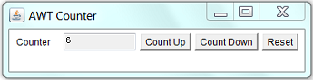Let's modify our AWTCounter example to include 3 buttons for counting up, counting down, and reset the count, respectively. We shall attach an anonymous inner class as the listener to each of buttons.
1 2 3 4 5 6 7 8 9 10 11 12 13 14 15 16 17 18 19 20 21 22 23 24 25 26 27 28 29 30 31 32 33 34 35 36 37 38 39 40 41 42 43 44 45 46 47 48 49 50 51 52 53 54 55 56 57 58 59 |
import java.awt.*; import java.awt.event.*; // An AWT GUI program inherits the top-level container java.awt.Frame public class AWTCounter3ButtonsAnonymousIC extends Frame { private TextField tfCount; private Button btnCountUp, btnCountDown, btnReset; private int count = 0; // Constructor to setup the GUI components and event handlers public AWTCounter3ButtonsAnonymousIC() { setLayout(new FlowLayout()); add(new Label("Counter")); // an anonymous instance of Label tfCount = new TextField("0", 10); tfCount.setEditable(false); // read-only add(tfCount); // "super" Frame adds tfCount btnCountUp = new Button("Count Up"); add(btnCountUp); // Construct an anonymous instance of an anonymous inner class. // The source Button adds the anonymous instance as ActionEvent listener btnCountUp.addActionListener(new ActionListener() { @Override public void actionPerformed(ActionEvent evt) { ++count; tfCount.setText(count + ""); } }); btnCountDown = new Button("Count Down"); add(btnCountDown); btnCountDown.addActionListener(new ActionListener() { @Override public void actionPerformed(ActionEvent evt) { count--; tfCount.setText(count + ""); } }); btnReset = new Button("Reset"); add(btnReset); btnReset.addActionListener(new ActionListener() { @Override public void actionPerformed(ActionEvent evt) { count = 0; tfCount.setText("0"); } }); setTitle("AWT Counter"); setSize(400, 100); setVisible(true); } // The entry main method public static void main(String[] args) { new AWTCounter3ButtonsAnonymousIC(); // Let the constructor do the job } } |
Dissecting the Program
- Each of the
Buttons uses one anonymous instance of an anonymous inner class as itsActionEventlistener.
Example 10: Using the Same Listener Instance for All the Buttons
If you use the same instance as the listener for all the 3 buttons, you need to determine which button has fired the event. It is because all the 3 buttons trigger the same event-handler method.
Using ActionEvent's getActionCommand()
In the following example, we use the same instance of a "named" inner class as the listener for all the 3 buttons. The listener needs to determine which button has fired the event. This can be accomplished via the ActionEvent's getActionCommand() method, which returns the button's label.
1 2 3 4 5 6 7 8 9 10 11 12 13 14 15 16 17 18 19 20 21 22 23 24 25 26 27 28 29 30 31 32 33 34 35 36 37 38 39 40 41 42 43 44 45 46 47 48 49 50 51 52 53 54 55 56 57 58 59 60 61 62 |
import java.awt.*; import java.awt.event.*; // An AWT GUI program inherits the top-level container java.awt.Frame public class AWTCounter3Buttons1Listener extends Frame { private TextField tfCount; private Button btnCountUp, btnCountDown, btnReset; private int count = 0; // Constructor to setup the GUI components and event handlers public AWTCounter3Buttons1Listener () { setLayout(new FlowLayout()); add(new Label("Counter")); tfCount = new TextField("0", 10); tfCount.setEditable(false); add(tfCount); // Construct Buttons btnCountUp = new Button("Count Up"); add(btnCountUp); btnCountDown = new Button("Count Down"); add(btnCountDown); btnReset = new Button("Reset"); add(btnReset); // Allocate an instance of the "named" inner class BtnListener. AllButtonsListener listener = new AllButtonsListener(); // Use the same listener instance for all the 3 Buttons. btnCountUp.addActionListener(listener); btnCountDown.addActionListener(listener); btnReset.addActionListener(listener); setTitle("AWT Counter"); setSize(400, 100); setVisible(true); } // The entry main method public static void main(String[] args) { new AWTCounter3Buttons1Listener(); // Let the constructor do the job } /** * AllButtonsListener is an named inner class used as ActionEvent listener for all the Buttons. */ private class AllButtonsListener implements ActionListener { @Override public void actionPerformed(ActionEvent evt) { // Need to determine which button fired the event. // the getActionCommand() returns the Button's label String btnLabel = evt.getActionCommand(); if (btnLabel.equals("Count Up")) { ++count; } else if (btnLabel.equals("Count Down")) { --count; } else { count = 0; } tfCount.setText(count + ""); } } } |
Using getSource() of EventObject
Besides the getActionCommand(), which is only available for ActionEvent, you can use the getSource() method, which is available to all event objects, to retrieve a reference to the source object that has fired the event. getSource() returns a java.lang.Object. You may need to downcast it to the proper type of the source object. For example,
1 2 3 4 5 6 7 8 9 10 11 12 13 14 15 16 17 18 19 20 21 22 23 24 25 26 27 28 29 30 31 32 33 34 35 36 37 38 39 40 41 42 43 44 45 46 47 48 49 50 51 52 53 54 55 56 57 58 59 60 61 62 |
import java.awt.*;
import java.awt.event.*;
public class AWTCounter3ButtonsGetSource extends Frame {
private TextField tfCount;
private Button btnCountUp, btnCountDown, btnReset;
private int count = 0;
// Constructor to setup the GUI components and event handlers
public AWTCounter3ButtonsGetSource () {
setLayout(new FlowLayout());
add(new Label("Counter"));
tfCount = new TextField("0", 10);
tfCount.setEditable(false);
add(tfCount);
// Construct Buttons
btnCountUp = new Button("Count Up");
add(btnCountUp);
btnCountDown = new Button("Count Down");
add(btnCountDown);
btnReset = new Button("Reset");
add(btnReset);
// Allocate an instance of inner class BtnListener.
AllButtonsListener listener = new AllButtonsListener();
// Use the same listener instance to all the 3 Buttons.
btnCountUp.addActionListener(listener);
btnCountDown.addActionListener(listener);
btnReset.addActionListener(listener);
setTitle("AWT Counter");
setSize(400, 100);
setVisible(true);
}
// The entry main method
public static void main(String[] args) {
new AWTCounter3ButtonsGetSource(); // Let the constructor do the job
}
/**
* AllButtonsListener is a named inner class used as ActionEvent listener for all the Buttons.
*/
private class AllButtonsListener implements ActionListener {
@Override
public void actionPerformed(ActionEvent evt) {
// Need to determine which button has fired the event.
Button source = (Button)evt.getSource();
// Get a reference of the source that has fired the event.
// getSource() returns a java.lang.Object. Downcast back to Button.
if (source == btnCountUp) {
++count;
} else if (source == btnCountDown) {
--count;
} else {
count = 0;
}
tfCount.setText(count + "");
}
}
}
|
Event Listener's Adapter Classes
Example 11: WindowAdapter for WindowListener
Using WindowListener Interface
Refer to the WindowEventDemo, a WindowEvent listener is required to implement the WindowListener interface, which declares 7 abstract methods. Although we are only interested in windowClosing(), we need to provide an empty body to the other 6 abstract methods in order to compile the program. This is tedious, e.g., we can rewrite the WindowEventDemo using an inner class implementing ActionListener as follows:
1 2 3 4 5 6 7 8 9 10 11 12 13 14 15 16 17 18 19 20 21 22 23 24 25 26 27 28 29 30 31 32 33 34 35 36 37 38 39 40 41 42 43 44 45 46 47 48 49 50 51 52 53 54 |
import java.awt.*; import java.awt.event.*; // An AWT GUI program inherits the top-level container java.awt.Frame public class WindowEventDemoWithInnerClass extends Frame { private TextField tfCount; private Button btnCount; private int count = 0; // Constructor to setup the GUI components and event handlers public WindowEventDemoWithInnerClass () { setLayout(new FlowLayout()); add(new Label("Counter")); tfCount = new TextField("0", 10); tfCount.setEditable(false); add(tfCount); btnCount = new Button("Count"); add(btnCount); btnCount.addActionListener(new ActionListener() { @Override public void actionPerformed(ActionEvent evt) { ++count; tfCount.setText(count + ""); } }); // Allocate an anonymous instance of an anonymous inner class // that implements WindowListener. // "super" Frame adds this instance as WindowEvent listener. addWindowListener(new WindowListener() { @Override public void windowClosing(WindowEvent evt) { System.exit(0); // terminate the program } // Need to provide an empty body for compilation @Override public void windowOpened(WindowEvent evt) { } @Override public void windowClosed(WindowEvent evt) { } @Override public void windowIconified(WindowEvent evt) { } @Override public void windowDeiconified(WindowEvent evt) { } @Override public void windowActivated(WindowEvent evt) { } @Override public void windowDeactivated(WindowEvent evt) { } }); setTitle("WindowEvent Demo"); setSize(250, 100); setVisible(true); } // The entry main method public static void main(String[] args) { new WindowEventDemoWithInnerClass(); // Let the constructor do the job } } |
Using WindowAdapter Superclass
An adapter class called WindowAdapter is therefore provided, which implements the WindowListener interface and provides default implementations to all the 7 abstract methods. You can then derive a subclass from WindowAdapter and override only methods of interest and leave the rest to their default implementation. For example,
1 2 3 4 5 6 7 8 9 10 11 12 13 14 15 16 17 18 19 20 21 22 23 24 25 26 27 28 29 30 31 32 33 34 35 36 37 38 39 40 41 42 43 44 45 46 47 |
import java.awt.*; import java.awt.event.*; // An AWT GUI program inherits the top-level container java.awt.Frame public class WindowEventDemoAdapter extends Frame { private TextField tfCount; private Button btnCount; private int count = 0; // Constructor to setup the GUI components and event handlers public WindowEventDemoAdapter () { setLayout(new FlowLayout()); add(new Label("Counter")); tfCount = new TextField("0", 10); tfCount.setEditable(false); add(tfCount); btnCount = new Button("Count"); add(btnCount); btnCount.addActionListener(new ActionListener() { @Override public void actionPerformed(ActionEvent evt) { ++count; tfCount.setText(count + ""); } }); // Allocate an anonymous instance of an anonymous inner class // that extends WindowAdapter. // "super" Frame adds the instance as WindowEvent listener. addWindowListener(new WindowAdapter() { @Override public void windowClosing(WindowEvent evt) { System.exit(0); // Terminate the program } }); setTitle("WindowEvent Demo"); setSize(250, 100); setVisible(true); } /** The entry main method */ public static void main(String[] args) { new WindowEventDemoAdapter(); // Let the constructor do the job } } |
Clearly, the adapter greatly simplifies the codes.
Other Event-Listener Adapter Classes
Similarly, adapter classes such as MouseAdapter, MouseMotionAdapter, KeyAdapter, FocusAdapter are available for MouseListener, MouseMotionListener, KeyListener, and FocusListener, respectively.
There is no ActionAdapter for ActionListener, because there is only one abstract method (i.e. actionPerformed()) declared in the ActionListener interface. This method has to be overridden and there is no need for an adapter.
[SKIP] The Legacy "this" Listener
If you read some old books, you may find many examples that use "this" object as the event listener.
For example,
1 2 3 4 5 6 7 8 9 10 11 12 13 14 15 16 17 18 19 20 21 22 23 24 25 26 27 28 29 30 31 32 33 34 35 36 37 38 39 40 41 42 43 44 45 46 47 48 49 50 51 52 53 54 55 56 57 58 59 60 61 62 63 64 65 66 67 |
import java.awt.*; // Using AWT containers and components import java.awt.event.*; // Using AWT events classes and listener interfaces // An AWT GUI program inherits the top-level container java.awt.Frame public class ThisListenerDemo extends Frame implements ActionListener, WindowListener { // This class acts as listener for ActionEvent and WindowEvent // A Java class can extend only one superclass, but it can implement multiple interfaces. private TextField tfCount; // Declare a TextField component private Button btnCount; // Declare a Button component private int count = 0; // Counter's value // Constructor to setup the GUI components and event handlers public ThisListenerDemo() { setLayout(new FlowLayout()); // "super" Frame sets to FlowLayout add(new Label("Counter")); // "super" Frame adds an anonymous Label tfCount = new TextField("0", 10); // Construct the TextField tfCount.setEditable(false); // read-only add(tfCount); // "super" Frame adds TextField btnCount = new Button("Count"); // Construct the Button add(btnCount); // "super" Frame adds Button btnCount.addActionListener(this); // btnCount (source object) fires ActionEvent upon clicking // btnCount adds "this" object as an ActionEvent listener addWindowListener(this); // "super" Frame (source object) fires WindowEvent. // "super" Frame adds "this" object as a WindowEvent listener. setTitle("WindowEvent Demo"); // "super" Frame sets title setSize(250, 100); // "super" Frame sets initial size setVisible(true); // "super" Frame shows } // The entry main() method public static void main(String[] args) { new ThisListenerDemo(); // Let the construct do the job } /* ActionEvent handler */ @Override public void actionPerformed(ActionEvent evt) { ++count; tfCount.setText(count + ""); } /* WindowEvent handlers */ // Called back upon clicking close-window button @Override public void windowClosing(WindowEvent evt) { System.exit(0); // Terminate the program } // Not Used, BUT need to provide an empty body to compile. @Override public void windowOpened(WindowEvent evt) { } @Override public void windowClosed(WindowEvent evt) { } // For Debugging @Override public void windowIconified(WindowEvent evt) { System.out.println("Window Iconified"); } @Override public void windowDeiconified(WindowEvent evt) { System.out.println("Window Deiconified"); } @Override public void windowActivated(WindowEvent evt) { System.out.println("Window Activated"); } @Override public void windowDeactivated(WindowEvent evt) { System.out.println("Window Deactivated"); } } |
There is only ONE class in this code. But this code is much harder to understand and seldom used nowadays. Using inner class is a better solution.
Layout Managers and Panel
A container has a so-called layout manager to arrange its components. The layout managers provide a level of abstraction to map your user interface on all windowing systems, so that the layout can be platform-independent.
AWT provides the following layout managers (in package java.awt): FlowLayout, GridLayout, BorderLayout, GridBagLayout, BoxLayout, CardLayout, and others. Swing added more layout manager in package javax.swing, to be described later.
Container's setLayout() method
A container has a setLayout() method to set its layout manager:
// java.awt.Container
public void setLayout(LayoutManager mgr)
To set up the layout of a Container (such as Frame, JFrame, Panel, or JPanel), you have to:
- Construct an instance of the chosen layout object, via
newand constructor, e.g.,new FlowLayout()) - Invoke the
setLayout()method of theContainer, with the layout object created as the argument; - Place the GUI components into the
Containerusing theadd()method in the correct order; or into the correct zones.
For example,
// Allocate a Panel (container) Panel pnl = new Panel(); // Allocate a new Layout object. The Panel container sets to this layout. pnl.setLayout(new FlowLayout()); // The Panel container adds components in the proper order. pnl.add(new JLabel("One")); pnl.add(new JLabel("Two")); pnl.add(new JLabel("Three")); ......
Container's getLayout() method
You can get the current layout via Container's getLayout() method.
Panel pnl = new Panel();
System.out.println(pnl.getLayout());
// java.awt.FlowLayout[hgap=5,vgap=5,align=center]
Panel's Initial Layout
Panel (and Swing's JPanel) provides a constructor to set its initial layout manager. It is because a primary function of Panel is to layout a group of component in a particular layout.
public void Panel(LayoutManager layout) // Construct a Panel in the given layout // By default, Panel (and JPanel) has FlowLayout // For example, create a Panel in BorderLayout Panel pnl = new Panel(new BorderLayout());
FlowLayout
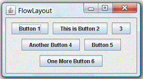In the java.awt.FlowLayout, components are arranged from left-to-right inside the container in the order that they are added (via method aContainer.add(aComponent)). When one row is filled, a new row will be started. The actual appearance depends on the width of the display window.
Constructors
public FlowLayout();
public FlowLayout(int alignment);
public FlowLayout(int alignment, int hgap, int vgap);
// alignment: FlowLayout.LEFT (or LEADING), FlowLayout.RIGHT (or TRAILING), or FlowLayout.CENTER
// hgap, vgap: horizontal/vertical gap between the components
// By default: hgap = 5, vgap = 5, alignment = FlowLayout.CENTER
Example
1 2 3 4 5 6 7 8 9 10 11 12 13 14 15 16 17 18 19 20 21 22 23 24 25 26 27 28 29 30 31 32 33 34 35 36 |
import java.awt.*; import java.awt.event.*; // An AWT GUI program inherits the top-level container java.awt.Frame public class AWTFlowLayoutDemo extends Frame { private Button btn1, btn2, btn3, btn4, btn5, btn6; // Constructor to setup GUI components and event handlers public AWTFlowLayoutDemo () { setLayout(new FlowLayout()); // "super" Frame sets layout to FlowLayout, which arranges the components // from left-to-right, and flow from top-to-bottom. btn1 = new Button("Button 1"); add(btn1); btn2 = new Button("This is Button 2"); add(btn2); btn3 = new Button("3"); add(btn3); btn4 = new Button("Another Button 4"); add(btn4); btn5 = new Button("Button 5"); add(btn5); btn6 = new Button("One More Button 6"); add(btn6); setTitle("FlowLayout Demo"); // "super" Frame sets title setSize(280, 150); // "super" Frame sets initial size setVisible(true); // "super" Frame shows } // The entry main() method public static void main(String[] args) { new AWTFlowLayoutDemo(); // Let the constructor do the job } } |
GridLayout
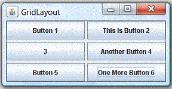In java.awt.GridLayout, components are arranged in a grid (matrix) of rows and columns inside the Container. Components are added in a left-to-right, top-to-bottom manner in the order they are added (via method aContainer.add(aComponent)).
Constructors
public GridLayout(int rows, int columns);
public GridLayout(int rows, int columns, int hgap, int vgap);
// By default: rows = 1, cols = 0, hgap = 0, vgap = 0
Example
1 2 3 4 5 6 7 8 9 10 11 12 13 14 15 16 17 18 19 20 21 22 23 24 25 26 27 28 29 30 31 32 33 34 35 36 |
import java.awt.*; import java.awt.event.*; // An AWT GUI program inherits the top-level container java.awt.Frame public class AWTGridLayoutDemo extends Frame { private Button btn1, btn2, btn3, btn4, btn5, btn6; // Constructor to setup GUI components and event handlers public AWTGridLayoutDemo () { setLayout(new GridLayout(3, 2, 3, 3)); // "super" Frame sets layout to 3x2 GridLayout, horizontal and vertical gaps of 3 pixels // The components are added from left-to-right, top-to-bottom btn1 = new Button("Button 1"); add(btn1); btn2 = new Button("This is Button 2"); add(btn2); btn3 = new Button("3"); add(btn3); btn4 = new Button("Another Button 4"); add(btn4); btn5 = new Button("Button 5"); add(btn5); btn6 = new Button("One More Button 6"); add(btn6); setTitle("GridLayout Demo"); // "super" Frame sets title setSize(280, 150); // "super" Frame sets initial size setVisible(true); // "super" Frame shows } // The entry main() method public static void main(String[] args) { new AWTGridLayoutDemo(); // Let the constructor do the job } } |
BorderLayout
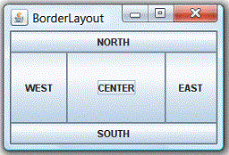In java.awt.BorderLayout, the container is divided into 5 zones: EAST, WEST, SOUTH, NORTH, and CENTER. Components are added using method aContainer.add(aComponent, zone), where zone is either BorderLayout.NORTH (or PAGE_START), BorderLayout.SOUTH (or PAGE_END), BorderLayout.WEST (or LINE_START), BorderLayout.EAST (or LINE_END), or BorderLayout.CENTER.
You need not place components to all the 5 zones. The NORTH and SOUTH components may be stretched horizontally; the EAST and WEST components may be stretched vertically; the CENTER component may stretch both horizontally and vertically to fill any space left over.
Constructors
public BorderLayout();
public BorderLayout(int hgap, int vgap);
// By default hgap = 0, vgap = 0
Example
1 2 3 4 5 6 7 8 9 10 11 12 13 14 15 16 17 18 19 20 21 22 23 24 25 26 27 28 29 30 31 32 33 34 35 |
import java.awt.*; import java.awt.event.*; // An AWT GUI program inherits the top-level container java.awt.Frame public class AWTBorderLayoutDemo extends Frame { private Button btnNorth, btnSouth, btnCenter, btnEast, btnWest; // Constructor to setup GUI components and event handlers public AWTBorderLayoutDemo () { setLayout(new BorderLayout(3, 3)); // "super" Frame sets layout to BorderLayout, // horizontal and vertical gaps of 3 pixels // The components are added to the specified zone btnNorth = new Button("NORTH"); add(btnNorth, BorderLayout.NORTH); btnSouth = new Button("SOUTH"); add(btnSouth, BorderLayout.SOUTH); btnCenter = new Button("CENTER"); add(btnCenter, BorderLayout.CENTER); btnEast = new Button("EAST"); add(btnEast, BorderLayout.EAST); btnWest = new Button("WEST"); add(btnWest, BorderLayout.WEST); setTitle("BorderLayout Demo"); // "super" Frame sets title setSize(280, 150); // "super" Frame sets initial size setVisible(true); // "super" Frame shows } // The entry main() method public static void main(String[] args) { new AWTBorderLayoutDemo(); // Let the constructor do the job } } |
Using Panels as Sub-Container to Organize Components
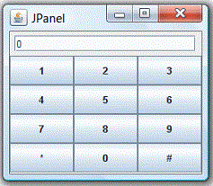An AWT Panel is a rectangular pane, which can be used as sub-container to organized a group of related components in a specific layout (e.g., FlowLayout, BorderLayout). Panels are secondary containers, which shall be added into a top-level container (such as Frame), or another Panel.
For example, the following figure shows a Frame in BorderLayout containing two Panels - panelResult in FlowLayout and panelButtons in GridLayout. panelResult is added to the NORTH, and panelButtons is added to the CENTER.
1 2 3 4 5 6 7 8 9 10 11 12 13 14 15 16 17 18 19 20 21 22 23 24 25 26 27 28 29 30 31 32 33 34 35 36 37 38 39 40 41 42 43 44 45 46 47 48 49 50 51 52 53 54 55 56 57 58 59 |
import java.awt.*; import java.awt.event.*; // An AWT GUI program inherits the top-level container java.awt.Frame public class AWTPanelDemo extends Frame { private Button[] btnNumbers; // Array of 10 numeric Buttons private Button btnHash, btnStar; private TextField tfDisplay; // Constructor to setup GUI components and event handlers public AWTPanelDemo () { // Set up display panel Panel panelDisplay = new Panel(new FlowLayout()); tfDisplay = new TextField("0", 20); panelDisplay.add(tfDisplay); // Set up button panel Panel panelButtons = new Panel(new GridLayout(4, 3)); btnNumbers = new Button[10]; // Construct an array of 10 numeric Buttons btnNumbers[1] = new Button("1"); // Construct Button "1" panelButtons.add(btnNumbers[1]); // The Panel adds this Button btnNumbers[2] = new Button("2"); panelButtons.add(btnNumbers[2]); btnNumbers[3] = new Button("3"); panelButtons.add(btnNumbers[3]); btnNumbers[4] = new Button("4"); panelButtons.add(btnNumbers[4]); btnNumbers[5] = new Button("5"); panelButtons.add(btnNumbers[5]); btnNumbers[6] = new Button("6"); panelButtons.add(btnNumbers[6]); btnNumbers[7] = new Button("7"); panelButtons.add(btnNumbers[7]); btnNumbers[8] = new Button("8"); panelButtons.add(btnNumbers[8]); btnNumbers[9] = new Button("9"); panelButtons.add(btnNumbers[9]); // You should use a loop for the above statements!!! btnStar = new Button("*"); panelButtons.add(btnStar); btnNumbers[0] = new Button("0"); panelButtons.add(btnNumbers[0]); btnHash = new Button("#"); panelButtons.add(btnHash); setLayout(new BorderLayout()); // "super" Frame sets to BorderLayout add(panelDisplay, BorderLayout.NORTH); add(panelButtons, BorderLayout.CENTER); setTitle("BorderLayout Demo"); // "super" Frame sets title setSize(200, 200); // "super" Frame sets initial size setVisible(true); // "super" Frame shows } // The entry main() method public static void main(String[] args) { new AWTPanelDemo(); // Let the constructor do the job } } |
GridBagLayout
Reference: Read "How to Use GridBagLayout" @ https://docs.oracle.com/javase/tutorial/uiswing/layout/gridbag.html.
Example 1
1 2 3 4 5 6 7 8 9 10 11 12 13 14 15 16 17 18 19 20 21 22 23 24 25 26 27 28 29 30 31 32 33 34 35 36 37 38 39 40 41 42 43 44 45 46 47 48 49 50 51 52 53 54 55 56 57 58 59 60 61 62 63 64 |
import java.awt.*;
import javax.swing.*;
@SuppressWarnings("serial")
public class GridBagLayoutExample extends JPanel {
JButton button1, button2, button3, button4, button5;
// Constructor
public GridBagLayoutExample() {
super.setLayout(new GridBagLayout()); // super JPanel
GridBagConstraints gbc = new GridBagConstraints();
// The following constraints are applicable to all components
// gbc.fill = GridBagConstraints.HORIZONTAL;
// Define constraints for individual components
button1 = new JButton("B1");
gbc.gridx = 0; // column 0 (first column)
gbc.gridy = 0; // row 0 (first row)
// gbc.weightx = 0.5; // weight for distributing extra x-spaces
super.add(button1, gbc); // add and apply constraints
button2 = new JButton("B2");
gbc.gridx = 1; // column 1
gbc.gridy = 0; // row 0
// gbc.weightx = 1.0;
super.add(button2, gbc);
button3 = new JButton("B3");
gbc.gridx = 2; // column 2
gbc.gridy = 0; // row 0
// gbc.weightx = 0.5;
super.add(button3, gbc);
button4 = new JButton("Long-Named Button 4");
gbc.gridx = 0; // column 0
gbc.gridy = 1; // row 1 (second row)
gbc.gridwidth = 3; // span 3 columns
gbc.ipady = 40; // internal padding-y
super.add(button4, gbc);
button5 = new JButton("5");
gbc.gridx = 1; // second column
gbc.gridy = 2; // third row
gbc.gridwidth = 2; // span 2 columns
gbc.ipady = 0; // reset to default
gbc.anchor = GridBagConstraints.PAGE_END; // align at bottom of space
gbc.insets = new Insets(10, 0, 0, 0); // top margin
// gbc.weighty = 1.0; // request any extra vertical space
super.add(button5, gbc);
}
public static void main(String[] args) {
javax.swing.SwingUtilities.invokeLater(new Runnable() {
public void run() {
JFrame frame = new JFrame("GridBagLayoutDemo");
frame.setContentPane(new GridBagLayoutExample());
frame.setDefaultCloseOperation(JFrame.EXIT_ON_CLOSE);
frame.setSize(300,300);
frame.setVisible(true);
}
});
}
}
|
Run the program, the output is in (a), where all components have their natural width and height, placed in center (anchor=CENTER) with extra x and y spaces at the 4 margins. The ipady increases the internal y-padding for button-4 (spans 3 columns). Button 5 (spans second and third columns) has top margin specified by insets, and anchor at the bottom-right corner (anchor=PAGE_END).
Uncomment the gbc.fill = GridBagConstraints.HORIZONTAL (line 14). The output is in (b), where ALL components fill horizontally with equal column width.
Uncomment all weightx (lines 20, 26, 32). The output is in (c). The extra x spaces are distributed according to the weightx of (0.5, 1.0, 0.5).
Uncomment the weighty (line 49). The output is in (d). The extra y spaces are given to row 3, as row 1 and 2 have weighty of 0 and non-participating in the distribution of extra y-spaces.
BoxLayout
BoxLayout arrange components in a single row or column. It respects components' requests on the minimum sizes.
[TODO] Example and diagram
Swing
Introduction
Swing is part of the so-called "Java Foundation Classes (JFC)" (have you heard of MFC?), which was introduced in 1997 after the release of JDK 1.1. JFC was subsequently included as an integral part of JDK since JDK 1.2. JFC consists of:
- Swing API: for advanced graphical programming.
- Accessibility API: provides assistive technology for the disabled.
- Java 2D API: for high quality 2D graphics and images.
- Pluggable look and feel supports.
- Drag-and-drop support between Java and native applications.
The goal of Java GUI programming is to allow the programmer to build GUI that looks good on ALL platforms. JDK 1.0's AWT was awkward and non-object-oriented (using many event.getSource()). JDK 1.1's AWT introduced event-delegation (event-driven) model, much clearer and object-oriented. JDK 1.1 also introduced inner class and JavaBeans – a component programming model for visual programming environment (similar to Visual Basic).
Swing appeared after JDK 1.1. It was introduced into JDK 1.1 as part of an add-on JFC (Java Foundation Classes). Swing is a rich set of easy-to-use, easy-to-understand JavaBean GUI components that can be dragged and dropped as "GUI builders" in visual programming environment. Swing is now an integral part of Java since JDK 1.2.
Swing's Features
Swing is huge (consists of 18 packages of 737 classes as in JDK 1.8) and has great depth. Compared with AWT, Swing provides a huge and comprehensive collection of reusable GUI components, as shown in the Figure below (extracted form Swing Tutorial).
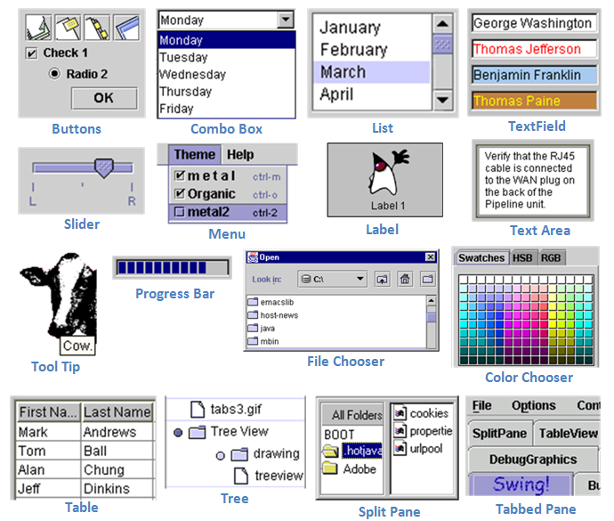The main features of Swing are (extracted from the Swing website):
- Swing is written in pure Java (except a few classes) and therefore is 100% portable.
- Swing components are lightweight. The AWT components are heavyweight (in terms of system resource utilization). Each AWT component has its own opaque native display, and always displays on top of the lightweight components. AWT components rely heavily on the underlying windowing subsystem of the native operating system. For example, an AWT button ties to an actual button in the underlying native windowing subsystem, and relies on the native windowing subsystem for their rendering and processing. Swing components (
JComponents) are written in Java. They are generally not "weight-down" by complex GUI considerations imposed by the underlying windowing subsystem. - Swing components support pluggable look-and-feel. You can choose between Java look-and-feel and the look-and-feel of the underlying OS (e.g., Windows, UNIX or macOS). If the later is chosen, a Swing button runs on the Windows looks like a Windows' button and feels like a Window's button. Similarly, a Swing button runs on the UNIX looks like a UNIX's button and feels like a UNIX's button.
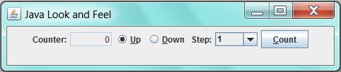 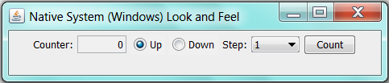
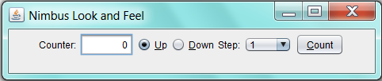 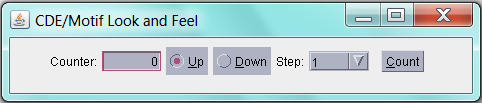 - Swing supports mouse-less operation, i.e., it can operate entirely using keyboard.
- Swing components support "tool-tips".
- Swing components are JavaBeans – a Component-based Model used in Visual Programming (like Visual Basic). You can drag-and-drop a Swing component into a "design form" using a "GUI builder" and double-click to attach an event handler.
- Swing application uses AWT event-handling classes (in package
java.awt.event). Swing added some new classes in packagejavax.swing.event, but they are not frequently used. - Swing application uses AWT's layout manager (such as
FlowLayoutandBorderLayoutin packagejava.awt). It added new layout managers, such asSprings,Struts, andBoxLayout(in packagejavax.swing). - Swing implements double-buffering and automatic repaint batching for smoother screen repaint.
- Swing introduces
JLayeredPaneandJInternalFramefor creating Multiple Document Interface (MDI) applications. - Swing supports floating toolbars (in
JToolBar), splitter control, "undo". - Others - check the Swing website.
Using Swing API
If you understood the AWT programming (in particular, container/component and event-handling), switching over to Swing (or any other Graphics packages) is straight-forward.
Swing's Components
Compared with the AWT component classes (in package java.awt), Swing component classes (in package javax.swing) begin with a prefix "J", e.g., JButton, JTextField, JLabel, JPanel, JFrame, or JApplet.
The above figure shows the class hierarchy of the swing GUI classes. Similar to AWT, there are two groups of classes: containers and components. A container is used to hold components. A container can also hold containers because it is a (subclass of) component.
As a rule, do not mix heavyweight AWT components and lightweight Swing components in the same program, as the heavyweight components will always be painted on top of the lightweight components.
Swing's Top-Level and Secondary Containers
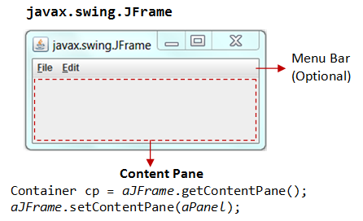Just like AWT application, a Swing application requires a top-level container. There are three top-level containers in Swing:
JFrame: used for the application's main window (with an icon, a title, minimize/maximize/close buttons, an optional menu-bar, and a content-pane), as illustrated.JDialog: used for secondary pop-up window (with a title, a close button, and a content-pane).JApplet: used for the applet's display-area (content-pane) inside a browser’s window.
Similarly to AWT, there are secondary containers (such as JPanel) which can be used to group and layout relevant components.
The Content-Pane of Swing's Top-Level Container
However, unlike AWT, the JComponents shall not be added onto the top-level container (e.g., JFrame, JApplet) directly because they are lightweight components. The JComponents must be added onto the so-called content-pane of the top-level container. Content-pane is in fact a java.awt.Container that can be used to group and layout components.
You could:
- get the content-pane via
getContentPane()from a top-level container, and add components onto it. For example,public class SwingDemo extends JFrame { // Constructor public SwingDemo() { // Get the content-pane of this JFrame, which is a java.awt.Container // All operations, such as setLayout() and add() operate on the content-pane Container cp = getContentPane(); cp.setLayout(new FlowLayout()); cp.add(new JLabel("Hello, world!")); cp.add(new JButton("Button")); ...... } ....... } - set the content-pane to a
JPanel(the main panel created in your application which holds all your GUI components) viaJFrame'ssetContentPane().public class SwingDemo extends JFrame { // Constructor public SwingDemo() { // The "main" JPanel holds all the GUI components JPanel mainPanel = new JPanel(new FlowLayout()); mainPanel.add(new JLabel("Hello, world!")); mainPanel.add(new JButton("Button")); // Set the content-pane of this JFrame to the main JPanel setContentPane(mainPanel); ...... } ....... }
Notes: If a component is added directly into a JFrame, it is added into the content-pane of JFrame instead, i.e.,
// Suppose that "this" is a JFrame add(new JLabel("add to JFrame directly")); // is executed as getContentPane().add(new JLabel("add to JFrame directly"));
Event-Handling in Swing
Swing uses the AWT event-handling classes (in package java.awt.event). Swing introduces a few new event-handling classes (in package javax.swing.event) but they are not frequently used.
Writing Swing Applications
In summary, to write a Swing application, you have:
- Use the Swing components with prefix
"J"in packagejavax.swing, e.g.,JFrame,JButton,JTextField,JLabel, etc. - A top-level container (typically
JFrame) is needed. TheJComponentsshould not be added directly onto the top-level container. They shall be added onto the content-pane of the top-level container. You can retrieve a reference to the content-pane by invoking methodgetContentPane()from the top-level container. - Swing applications uses AWT event-handling classes, e.g.,
ActionEvent/ActionListener,MouseEvent/MouseListener, etc. - Run the constructor in the Event Dispatcher Thread (instead of Main thread) for thread safety, as shown in the following program template.
Swing Program Template
1 2 3 4 5 6 7 8 9 10 11 12 13 14 15 16 17 18 19 20 21 22 23 24 25 26 27 28 29 30 31 32 33 34 35 36 37 38 39 40 41 42 43 44 45 |
import java.awt.*; // Using AWT layouts import java.awt.event.*; // Using AWT event classes and listener interfaces import javax.swing.*; // Using Swing components and containers // A Swing GUI application inherits from top-level container javax.swing.JFrame public class SwingTemplate extends JFrame { // Private instance variables // ...... // Constructor to setup the GUI components and event handlers public SwingTemplate() { // Retrieve the top-level content-pane from JFrame Container cp = getContentPane(); // Content-pane sets layout cp.setLayout(new ....Layout()); // Allocate the GUI components // ..... // Content-pane adds components cp.add(....); // Source object adds listener // ..... setDefaultCloseOperation(JFrame.EXIT_ON_CLOSE); // Exit the program when the close-window button clicked setTitle("......"); // "super" JFrame sets title setSize(300, 150); // "super" JFrame sets initial size setVisible(true); // "super" JFrame shows } // The entry main() method public static void main(String[] args) { // Run GUI codes in Event-Dispatching thread for thread-safety SwingUtilities.invokeLater(new Runnable() { @Override public void run() { new SwingTemplate(); // Let the constructor do the job } }); } } |
I will explain this template in the following Swing example.
Swing Example 1: SwingCounter
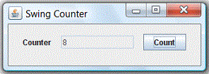Let's convert the earlier AWT application example into Swing. Compare the two source files and note the changes (which are highlighted). The display is shown below. Note the differences in look and feel between the AWT GUI components and Swing's.
1 2 3 4 5 6 7 8 9 10 11 12 13 14 15 16 17 18 19 20 21 22 23 24 25 26 27 28 29 30 31 32 33 34 35 36 37 38 39 40 41 42 43 44 45 46 47 48 49 50 51 52 |
import java.awt.*; // Using AWT layouts import java.awt.event.*; // Using AWT event classes and listener interfaces import javax.swing.*; // Using Swing components and containers // A Swing GUI application inherits from top-level container javax.swing.JFrame public class SwingCounter extends JFrame { // JFrame instead of Frame private JTextField tfCount; // Use Swing's JTextField instead of AWT's TextField private JButton btnCount; // Using Swing's JButton instead of AWT's Button private int count = 0; // Constructor to setup the GUI components and event handlers public SwingCounter() { // Retrieve the content-pane of the top-level container JFrame // All operations done on the content-pane Container cp = getContentPane(); cp.setLayout(new FlowLayout()); // The content-pane sets its layout cp.add(new JLabel("Counter")); tfCount = new JTextField("0"); tfCount.setEditable(false); cp.add(tfCount); btnCount = new JButton("Count"); cp.add(btnCount); // Allocate an anonymous instance of an anonymous inner class that // implements ActionListener as ActionEvent listener btnCount.addActionListener(new ActionListener() { @Override public void actionPerformed(ActionEvent evt) { ++count; tfCount.setText(count + ""); } }); setDefaultCloseOperation(JFrame.EXIT_ON_CLOSE); // Exit program if close-window button clicked setTitle("Swing Counter"); // "super" JFrame sets title setSize(300, 100); // "super" JFrame sets initial size setVisible(true); // "super" JFrame shows } // The entry main() method public static void main(String[] args) { // Run the GUI construction in the Event-Dispatching thread for thread-safety SwingUtilities.invokeLater(new Runnable() { @Override public void run() { new SwingCounter(); // Let the constructor do the job } }); } } |
JFrame's Content-Pane
The JFrame's method getContentPane() returns the content-pane (which is a java.awt.Container) of the JFrame. You can then set its layout (the default layout is BorderLayout), and add components into it. For example,
Container cp = getContentPane(); // Get the content-pane of this JFrame cp.setLayout(new FlowLayout()); // content-pane sets to FlowLayout cp.add(new JLabel("Counter")); // content-pane adds a JLabel component ...... cp.add(tfCount); // content-pane adds a JTextField component ...... cp.add(btnCount); // content-pane adds a JButton component
You can also use the JFrame's setContentPane() method to directly set the content-pane to a JPanel (or a JComponent). For example,
JPanel displayPanel = new JPanel();
setContentPane(displayPanel);
// "this" JFrame sets its content-pane to a JPanel directly
.....
// The above is different from:
getContentPane().add(displayPanel);
// Add a JPanel into the content-pane. Appearance depends on the JFrame's layout.
JFrame's setDefaultCloseOperation()
Instead of writing a WindowEvent listener with a windowClosing() handler to process the "close-window" button, JFrame provides a method called setDefaultCloseOperation() to sets the default operation when the user initiates a "close" on this frame. Typically, we choose the option JFrame.EXIT_ON_CLOSE, which terminates the application via a System.exit().
setDefaultCloseOperation(JFrame.EXIT_ON_CLOSE);
Running the GUI Construction Codes on the Event-Dispatching Thread
In the previous examples, we invoke the constructor directly in the entry main() method to setup the GUI components. For example,
// The entry main method public static void main(String[] args) { // Invoke the constructor (by allocating an instance) to setup the GUI new SwingCounter(); }
The constructor will be executed in the so-called "Main-Program" thread. This may cause multi-threading issues (such as unresponsive user-interface and deadlock).
It is recommended to execute the GUI setup codes in the so-called "Event-Dispatching" thread, instead of "Main-Program" thread, for thread-safe operations. Event-dispatching thread, which processes events, should be used when the codes updates the GUI.
To run the constructor on the event-dispatching thread, invoke static method SwingUtilities.invokeLater() to asynchronously queue the constructor on the event-dispatching thread. The codes will be run after all pending events have been processed. For example,
public static void main(String[] args) {
// Run the GUI codes in the Event-dispatching thread for thread-safety
SwingUtilities.invokeLater(new Runnable() {
@Override
public void run() {
new SwingCounter(); // Let the constructor do the job
}
});
}
Note: javax.swing.SwingUtilities.invokeLater() is a cover for java.awt.EventQueue.invokeLater() (which is used in the NetBeans' Visual GUI Builder).
At times, for example in game programming, the constructor or the main() may contains non-GUI codes. Hence, it is a common practice to create a dedicated method called initComponents() (used in NetBeans visual GUI builder) or createAndShowGUI() (used in Swing tutorial) to handle all the GUI codes (and another method called initGame() to handle initialization of the game's objects). This GUI init method shall be run in the event-dispatching thread.
Warning Message "The serialization class does not declare a static final serialVersionUID field of type long"
This warning message is triggered because java.awt.Frame (via its superclass java.awt.Component) implements the java.io.Serializable interface. This interface enables the object to be written out to an output stream serially (via method writeObject()); and read back into the program (via method readObject()). The serialization runtime uses a number (called serialVersionUID) to ensure that the object read into the program is compatible with the class definition, and not belonging to another version.
You have these options:
- Simply ignore this warning message. If a
serializableclass does not explicitly declare aserialVersionUID, then the serialization runtime will calculate a defaultserialVersionUIDvalue for that class based on various aspects of the class. - Add a
serialVersionUID(Recommended), e.g.private static final long serialVersionUID = 1L; // version 1 - Suppress this particular warning via annotation
@SuppressWarnings(in packagejava.lang) (JDK 1.5):@SuppressWarnings("serial") public class MyFrame extends JFrame { ...... }
Swing Example 2: SwingAccumulator
1 2 3 4 5 6 7 8 9 10 11 12 13 14 15 16 17 18 19 20 21 22 23 24 25 26 27 28 29 30 31 32 33 34 35 36 37 38 39 40 41 42 43 44 45 46 47 48 49 50 51 52 53 54 |
import java.awt.*; // Using layouts import java.awt.event.*; // Using AWT event classes and listener interfaces import javax.swing.*; // Using Swing components and containers // A Swing GUI application inherits the top-level container javax.swing.JFrame public class SwingAccumulator extends JFrame { private JTextField tfInput, tfOutput; private int sum = 0; // accumulated sum, init to 0 // Constructor to setup the GUI components and event handlers public SwingAccumulator() { // Retrieve the content-pane of the top-level container JFrame // All operations done on the content-pane Container cp = getContentPane(); cp.setLayout(new GridLayout(2, 2, 5, 5)); // The content-pane sets its layout cp.add(new JLabel("Enter an Integer: ")); tfInput = new JTextField(10); cp.add(tfInput); cp.add(new JLabel("The Accumulated Sum is: ")); tfOutput = new JTextField(10); tfOutput.setEditable(false); // read-only cp.add(tfOutput); // Allocate an anonymous instance of an anonymous inner class that // implements ActionListener as ActionEvent listener tfInput.addActionListener(new ActionListener() { @Override public void actionPerformed(ActionEvent evt) { // Get the String entered into the input TextField, convert to int int numberIn = Integer.parseInt(tfInput.getText()); sum += numberIn; // accumulate numbers entered into sum tfInput.setText(""); // clear input TextField tfOutput.setText(sum + ""); // display sum on the output TextField } }); setDefaultCloseOperation(JFrame.EXIT_ON_CLOSE); // Exit program if close-window button clicked setTitle("Swing Accumulator"); // "super" Frame sets title setSize(350, 120); // "super" Frame sets initial size setVisible(true); // "super" Frame shows } // The entry main() method public static void main(String[] args) { // Run the GUI construction in the Event-Dispatching thread for thread-safety SwingUtilities.invokeLater(new Runnable() { @Override public void run() { new SwingAccumulator(); // Let the constructor do the job } }); } } |
Using Visual GUI Builder - NetBeans/Eclipse
If you have a complicated layout for your GUI application, you should use a GUI Builder, such as NetBeans or Eclipse to layout your GUI components in a drag-and-drop manner, similar to the popular visual languages such as Visual Basic.
NetBeans
For using NetBeans GUI Builder, read my "Writing Java GUI (AWT/Swing) Application in NetBeans"; or Swing Tutorial's "Learning Swing with the NetBeans IDE".
Eclipse
For using Eclipse GUI Builder, read "Writing Swing Applications using Eclipse GUI Builder".
LINK TO JAVA REFERENCES & RESOURCESMORE REFERENCES & RESOURCES
- "Creating a GUI With JFC/Swing" (aka "The Swing Tutorial") @ http://docs.oracle.com/javase/tutorial/uiswing/.
- JFC Demo (under JDK demo "
jfc" directory). - Java2D Tutorial @ http://docs.oracle.com/javase/tutorial/2d/index.html.
- JOGL (Java Binding on OpenGL)
- Java3D